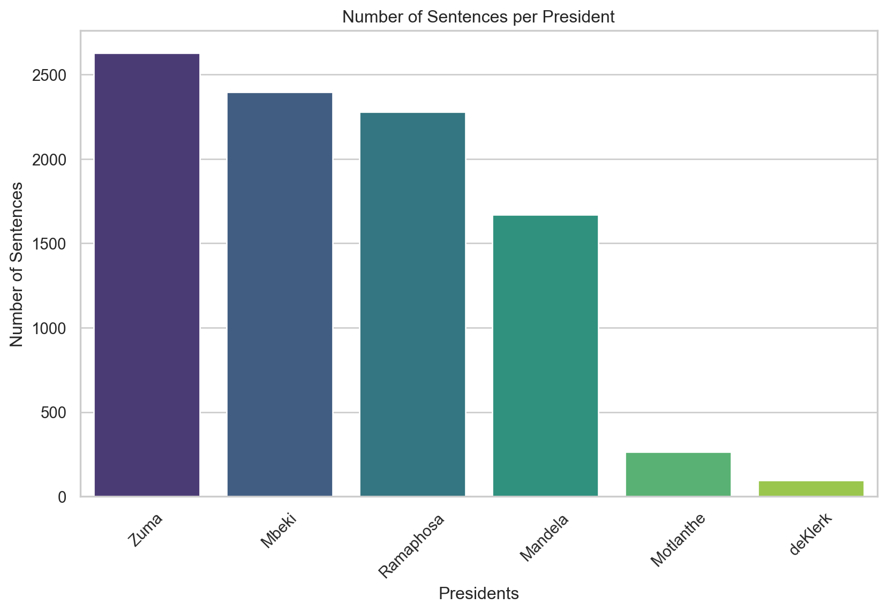
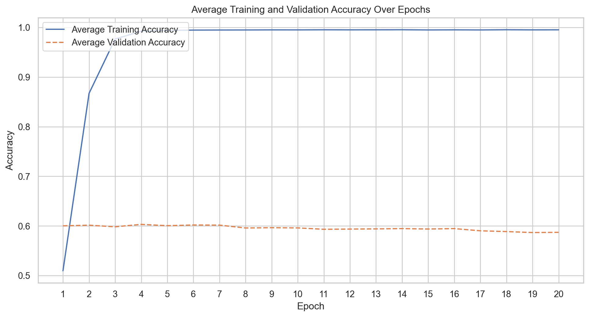
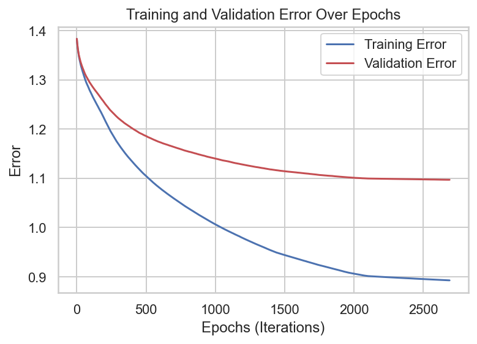

<!DOCTYPE html>
<html xmlns="http://www.w3.org/1999/xhtml" lang="en" xml:lang="en"><head>

<meta charset="utf-8">
<meta name="generator" content="quarto-1.2.269">

<meta name="viewport" content="width=device-width, initial-scale=1.0, user-scalable=yes">


<title>SONA_NLP_Python</title>
<style>
code{white-space: pre-wrap;}
span.smallcaps{font-variant: small-caps;}
div.columns{display: flex; gap: min(4vw, 1.5em);}
div.column{flex: auto; overflow-x: auto;}
div.hanging-indent{margin-left: 1.5em; text-indent: -1.5em;}
ul.task-list{list-style: none;}
ul.task-list li input[type="checkbox"] {
  width: 0.8em;
  margin: 0 0.8em 0.2em -1.6em;
  vertical-align: middle;
}
pre > code.sourceCode { white-space: pre; position: relative; }
pre > code.sourceCode > span { display: inline-block; line-height: 1.25; }
pre > code.sourceCode > span:empty { height: 1.2em; }
.sourceCode { overflow: visible; }
code.sourceCode > span { color: inherit; text-decoration: inherit; }
div.sourceCode { margin: 1em 0; }
pre.sourceCode { margin: 0; }
@media screen {
div.sourceCode { overflow: auto; }
}
@media print {
pre > code.sourceCode { white-space: pre-wrap; }
pre > code.sourceCode > span { text-indent: -5em; padding-left: 5em; }
}
pre.numberSource code
  { counter-reset: source-line 0; }
pre.numberSource code > span
  { position: relative; left: -4em; counter-increment: source-line; }
pre.numberSource code > span > a:first-child::before
  { content: counter(source-line);
    position: relative; left: -1em; text-align: right; vertical-align: baseline;
    border: none; display: inline-block;
    -webkit-touch-callout: none; -webkit-user-select: none;
    -khtml-user-select: none; -moz-user-select: none;
    -ms-user-select: none; user-select: none;
    padding: 0 4px; width: 4em;
    color: #aaaaaa;
  }
pre.numberSource { margin-left: 3em; border-left: 1px solid #aaaaaa;  padding-left: 4px; }
div.sourceCode
  {   }
@media screen {
pre > code.sourceCode > span > a:first-child::before { text-decoration: underline; }
}
code span.al { color: #ff0000; font-weight: bold; } /* Alert */
code span.an { color: #60a0b0; font-weight: bold; font-style: italic; } /* Annotation */
code span.at { color: #7d9029; } /* Attribute */
code span.bn { color: #40a070; } /* BaseN */
code span.bu { color: #008000; } /* BuiltIn */
code span.cf { color: #007020; font-weight: bold; } /* ControlFlow */
code span.ch { color: #4070a0; } /* Char */
code span.cn { color: #880000; } /* Constant */
code span.co { color: #60a0b0; font-style: italic; } /* Comment */
code span.cv { color: #60a0b0; font-weight: bold; font-style: italic; } /* CommentVar */
code span.do { color: #ba2121; font-style: italic; } /* Documentation */
code span.dt { color: #902000; } /* DataType */
code span.dv { color: #40a070; } /* DecVal */
code span.er { color: #ff0000; font-weight: bold; } /* Error */
code span.ex { } /* Extension */
code span.fl { color: #40a070; } /* Float */
code span.fu { color: #06287e; } /* Function */
code span.im { color: #008000; font-weight: bold; } /* Import */
code span.in { color: #60a0b0; font-weight: bold; font-style: italic; } /* Information */
code span.kw { color: #007020; font-weight: bold; } /* Keyword */
code span.op { color: #666666; } /* Operator */
code span.ot { color: #007020; } /* Other */
code span.pp { color: #bc7a00; } /* Preprocessor */
code span.sc { color: #4070a0; } /* SpecialChar */
code span.ss { color: #bb6688; } /* SpecialString */
code span.st { color: #4070a0; } /* String */
code span.va { color: #19177c; } /* Variable */
code span.vs { color: #4070a0; } /* VerbatimString */
code span.wa { color: #60a0b0; font-weight: bold; font-style: italic; } /* Warning */
</style>


<script src="site_libs/quarto-nav/quarto-nav.js"></script>
<script src="site_libs/quarto-nav/headroom.min.js"></script>
<script src="site_libs/clipboard/clipboard.min.js"></script>
<script src="site_libs/quarto-search/autocomplete.umd.js"></script>
<script src="site_libs/quarto-search/fuse.min.js"></script>
<script src="site_libs/quarto-search/quarto-search.js"></script>
<meta name="quarto:offset" content="./">
<script src="site_libs/quarto-html/quarto.js"></script>
<script src="site_libs/quarto-html/popper.min.js"></script>
<script src="site_libs/quarto-html/tippy.umd.min.js"></script>
<script src="site_libs/quarto-html/anchor.min.js"></script>
<link href="site_libs/quarto-html/tippy.css" rel="stylesheet">
<link href="site_libs/quarto-html/quarto-syntax-highlighting.css" rel="stylesheet" id="quarto-text-highlighting-styles">
<script src="site_libs/bootstrap/bootstrap.min.js"></script>
<link href="site_libs/bootstrap/bootstrap-icons.css" rel="stylesheet">
<link href="site_libs/bootstrap/bootstrap.min.css" rel="stylesheet" id="quarto-bootstrap" data-mode="light">
<script id="quarto-search-options" type="application/json">{
  "location": "navbar",
  "copy-button": false,
  "collapse-after": 3,
  "panel-placement": "end",
  "type": "overlay",
  "limit": 20,
  "language": {
    "search-no-results-text": "No results",
    "search-matching-documents-text": "matching documents",
    "search-copy-link-title": "Copy link to search",
    "search-hide-matches-text": "Hide additional matches",
    "search-more-match-text": "more match in this document",
    "search-more-matches-text": "more matches in this document",
    "search-clear-button-title": "Clear",
    "search-detached-cancel-button-title": "Cancel",
    "search-submit-button-title": "Submit"
  }
}</script>

  <script src="https://cdn.jsdelivr.net/npm/mathjax@3/es5/tex-chtml-full.js" type="text/javascript"></script>

<link rel="stylesheet" href="styles.css">
</head>

<body class="nav-fixed">

<div id="quarto-search-results"></div>
  <header id="quarto-header" class="headroom fixed-top">
    <nav class="navbar navbar-expand-lg navbar-dark ">
      <div class="navbar-container container-fluid">
      <div class="navbar-brand-container">
    <a class="navbar-brand" href="./index.html">
    <span class="navbar-title">SONA_NLP_Python</span>
    </a>
  </div>
          <button class="navbar-toggler" type="button" data-bs-toggle="collapse" data-bs-target="#navbarCollapse" aria-controls="navbarCollapse" aria-expanded="false" aria-label="Toggle navigation" onclick="if (window.quartoToggleHeadroom) { window.quartoToggleHeadroom(); }">
  <span class="navbar-toggler-icon"></span>
</button>
          <div class="collapse navbar-collapse" id="navbarCollapse">
            <ul class="navbar-nav navbar-nav-scroll me-auto">
  <li class="nav-item">
    <a class="nav-link active" href="./index.html" aria-current="page">
 <span class="menu-text">Home</span></a>
  </li>  
  <li class="nav-item">
    <a class="nav-link" href="./about.html">
 <span class="menu-text">About</span></a>
  </li>  
</ul>
              <div id="quarto-search" class="" title="Search"></div>
          </div> <!-- /navcollapse -->
      </div> <!-- /container-fluid -->
    </nav>
</header>
<!-- content -->
<div id="quarto-content" class="quarto-container page-columns page-rows-contents page-layout-article page-navbar">
<!-- sidebar -->
<!-- margin-sidebar -->
    <div id="quarto-margin-sidebar" class="sidebar margin-sidebar">
        <nav id="TOC" role="doc-toc" class="toc-active">
    <h2 id="toc-title">On this page</h2>
   
  <ul>
  <li><a href="#introduction" id="toc-introduction" class="nav-link active" data-scroll-target="#introduction">Introduction</a></li>
  <li><a href="#literature-review" id="toc-literature-review" class="nav-link" data-scroll-target="#literature-review">Literature Review</a></li>
  <li><a href="#methods" id="toc-methods" class="nav-link" data-scroll-target="#methods">Methods</a>
  <ul class="collapse">
  <li><a href="#data-pre-processing" id="toc-data-pre-processing" class="nav-link" data-scroll-target="#data-pre-processing">Data Pre-Processing</a></li>
  <li><a href="#feature-extraction" id="toc-feature-extraction" class="nav-link" data-scroll-target="#feature-extraction">Feature Extraction</a>
  <ul class="collapse">
  <li><a href="#bag-of-words-bow" id="toc-bag-of-words-bow" class="nav-link" data-scroll-target="#bag-of-words-bow">Bag of Words (BoW)</a></li>
  <li><a href="#term-frequency-inverse-document-frequency-tf-idf" id="toc-term-frequency-inverse-document-frequency-tf-idf" class="nav-link" data-scroll-target="#term-frequency-inverse-document-frequency-tf-idf">Term Frequency-Inverse Document Frequency (TF-IDF)</a></li>
  <li><a href="#word-embeddings" id="toc-word-embeddings" class="nav-link" data-scroll-target="#word-embeddings">Word Embeddings</a></li>
  </ul></li>
  <li><a href="#modelling" id="toc-modelling" class="nav-link" data-scroll-target="#modelling">Modelling</a>
  <ul class="collapse">
  <li><a href="#gradient-boosted-trees" id="toc-gradient-boosted-trees" class="nav-link" data-scroll-target="#gradient-boosted-trees">Gradient Boosted Trees</a></li>
  <li><a href="#support-vector-machines" id="toc-support-vector-machines" class="nav-link" data-scroll-target="#support-vector-machines">Support Vector Machines</a></li>
  </ul></li>
  </ul></li>
  <li><a href="#eda" id="toc-eda" class="nav-link" data-scroll-target="#eda">EDA</a></li>
  <li><a href="#overall-top-words-used" id="toc-overall-top-words-used" class="nav-link" data-scroll-target="#overall-top-words-used">Overall top Words used</a></li>
  <li><a href="#bag-of-words-data-split" id="toc-bag-of-words-data-split" class="nav-link" data-scroll-target="#bag-of-words-data-split">Bag of Words + Data Split</a></li>
  <li><a href="#boosted-tree-catboost" id="toc-boosted-tree-catboost" class="nav-link" data-scroll-target="#boosted-tree-catboost">Boosted Tree CatBoost</a></li>
  <li><a href="#neural-network" id="toc-neural-network" class="nav-link" data-scroll-target="#neural-network">Neural Network</a>
  <ul class="collapse">
  <li><a href="#svm" id="toc-svm" class="nav-link" data-scroll-target="#svm">SVM</a></li>
  </ul></li>
  <li><a href="#tf-idf" id="toc-tf-idf" class="nav-link" data-scroll-target="#tf-idf">TF-IDF</a>
  <ul class="collapse">
  <li><a href="#catboost" id="toc-catboost" class="nav-link" data-scroll-target="#catboost">Catboost</a></li>
  <li><a href="#svm-1" id="toc-svm-1" class="nav-link" data-scroll-target="#svm-1">SVM</a>
  <ul class="collapse">
  <li><a href="#neural-net" id="toc-neural-net" class="nav-link" data-scroll-target="#neural-net">Neural Net</a></li>
  </ul></li>
  </ul></li>
  <li><a href="#word-embeddings-1" id="toc-word-embeddings-1" class="nav-link" data-scroll-target="#word-embeddings-1">Word Embeddings</a>
  <ul class="collapse">
  <li><a href="#svm-2" id="toc-svm-2" class="nav-link" data-scroll-target="#svm-2">SVM</a></li>
  <li><a href="#neural-network-1" id="toc-neural-network-1" class="nav-link" data-scroll-target="#neural-network-1">Neural Network</a></li>
  </ul></li>
  </ul>
</nav>
    </div>
<!-- main -->
<main class="content" id="quarto-document-content">

<header id="title-block-header" class="quarto-title-block default">
<div class="quarto-title">
<h1 class="title">SONA_NLP_Python</h1>
</div>


<div class="quarto-title-meta">

    
  
    
  </div>
  

</header>

<section id="introduction" class="level1">
<h1>Introduction</h1>
<p>This paper critically analyzes the State of the Nation Address (SONA) speeches delivered by various South African presidents from 1994 to 2023. The primary objective is to categorize each president based on single sentences extracted from their respective SONA speeches. The study unfolds in XXX main sections.</p>
<p>Initially, a concise literature review is presented, with emphasis on the domain of Natural Language Processing (NLP), particularly focusing on classification tasks within NLP. This review lays the groundwork for the methodologies and approaches applied in later sections of the paper.</p>
<p>Subsequent sections offer an in-depth exploration and meticulous cleaning of the data utilized in the study. The exploration phase scrutinizes the dataset’s balance and analyzes the vocabulary used, both overall and by each specific president. These preliminary steps are crucial for ensuring the integrity and reliability of the study’s findings.</p>
<p>The paper then transitions to a detailed exposition of the methodologies employed in the study. The methods section elucidates the three feature extraction tools deployed: Bag of Words (BoW), Term Frequency-Inverse Document Frequency (TF-IDF), and Word Tokenization. Additionally, it describes the XXX predictive models applied, namely Gradient Boosted Trees, Feed Forward Neural Networks, and Support Vector Machines. Each tool and model is presented with a rationale for its inclusion and an explanation of its contribution to the study’s objectives.</p>
<p>Following the methods section, the paper presents and succinctly discusses the study’s results. This section provides an initial interpretation of the findings, preparing the ground for the more in-depth analysis that follows.</p>
<p>In the penultimate section, a comprehensive discussion of the results is provided. This discussion delves into the insights gleaned from the findings, offering detailed interpretations and drawing connections with the literature reviewed earlier. This section aims not only to shed light on the study’s findings but also to locate these within the broader academic discourse on the subject.</p>
<p>Finally, the paper concludes with a reflective overview of the study as a whole. This concluding section evaluates the study’s successes and limitations, reflects on its contributions to the field, and suggests avenues for future research and exploration. Through this reflective lens, the paper not only summarizes its findings but also invites further scholarly engagement with the questions and challenges raised during the study.</p>
</section>
<section id="literature-review" class="level1">
<h1>Literature Review</h1>
</section>
<section id="methods" class="level1">
<h1>Methods</h1>
<p>The methods applies fall into XXX main categoriis that also follows the workflow of the project. More specifically, data pre-processing, feature extraction, modellinig and model evaluation.</p>
<section id="data-pre-processing" class="level2">
<h2 class="anchored" data-anchor-id="data-pre-processing">Data Pre-Processing</h2>
<p>In the data preprocessing phase prior to feature extraction, initial data loading was accomplished from text files, with each file containing SONA speeches from different South African presidents from 1994 to 2023. Files were filtered to ensure they were valid, and the president’s names were extracted and cleaned for later use. The speeches within each file were tokenized into sentences using the NLTK library, and any unnecessary newline characters within these sentences were removed. Each sentence was then associated with the relevant president, resulting in a structured data frame containing each sentence alongside its corresponding president’s name. Following this, the data underwent exploratory data analysis (EDA) where sentences associated with specific presidents were filtered out, and sentence lengths were calculated and visualized. The sentences were further cleaned by removing stop words (common words that do not contribute to the meaning of a sentence), and then grouped by president. Subsequently, the cleaned sentences were used for generating word clouds for visual inspection. Furthermore the most common words across all presidents were calculated and the average words per sentence was computed and plotted for each preesident.</p>
</section>
<section id="feature-extraction" class="level2">
<h2 class="anchored" data-anchor-id="feature-extraction">Feature Extraction</h2>
<section id="bag-of-words-bow" class="level3">
<h3 class="anchored" data-anchor-id="bag-of-words-bow">Bag of Words (BoW)</h3>
<p>The Bag of Words (BoW) method represents text data as a matrix of token (typically words) occurrence within a given document. Each row of the matrix corresponds to a document, while each column represents a unique token in the dataset. The matrix cell contains the count of occurrences of the token in the document. In mathematical terms, for a set of <span class="math inline">\(n\)</span> documents <span class="math inline">\(D\)</span> and a set of <span class="math inline">\(m\)</span> unique tokens <span class="math inline">\(T\)</span>, the BoW matrix <span class="math inline">\(M\)</span> is a <span class="math inline">\(n \times m\)</span> matrix where <span class="math inline">\(M_{ij}\)</span> is the frequency of token <span class="math inline">\(j\)</span> in document <span class="math inline">\(i\)</span>. For the dataset in question, each sentence from the president’s speeches is treated as a document. The BoW model tokenizes each sentence into words, creating a matrix that reflects the frequency count of each word within each sentence, yielding a sparse matrix representation of the word distribution in each president’s speech.</p>
</section>
<section id="term-frequency-inverse-document-frequency-tf-idf" class="level3">
<h3 class="anchored" data-anchor-id="term-frequency-inverse-document-frequency-tf-idf">Term Frequency-Inverse Document Frequency (TF-IDF)</h3>
<p>The Term Frequency-Inverse Document Frequency (TF-IDF) technique assigns a weight to each term in a document reflecting its importance in the document relative to the entire corpus. The TF-IDF value of a term <span class="math inline">\(t\)</span> in a document <span class="math inline">\(d\)</span> within a corpus <span class="math inline">\(D\)</span> is computed as <span class="math inline">\(\text{TF-IDF}(t, d) = \text{TF}(t, d) \times \text{IDF}(t, D)\)</span>, where <span class="math inline">\(\text{TF}(t, d)\)</span> is the frequency of term <span class="math inline">\(t\)</span> in document <span class="math inline">\(d\)</span> divided by the total number of terms in <span class="math inline">\(d\)</span>, and <span class="math inline">\(\text{IDF}(t, D)\)</span> is the logarithm of the total number of documents in <span class="math inline">\(D\)</span> divided by the number of documents containing term <span class="math inline">\(t\)</span>. In the context of the dataset, TF-IDF is calculated for each term in every sentence, resulting in a vector of TF-IDF values for each sentence, thereby emphasizing terms that are distinctive to specific speeches or presidents.</p>
</section>
<section id="word-embeddings" class="level3">
<h3 class="anchored" data-anchor-id="word-embeddings">Word Embeddings</h3>
<p>Sentences from the presidential speeches dataset are tokenized into words. These tokens are then fed into the Word2Vec model, which learns vector representations for each word by predicting the context in which a word appears, effectively capturing the semantic relationships between words.Upon training Word2Vec with the tokenized sentences, each word is represented as a high-dimensional vector. To form a representative vector for a complete sentence, the word vectors within each sentence are averaged. This results in a single vector per sentence, encapsulating the semantic essence of the sentence based on its constituent words.</p>
<p>These sentence-level vectors serve as the dataset’s numerical features, providing a semantically rich representation of the sentences for subsequent machine learning applications in the project. Each vector not only represents its sentence but also mirrors the inherent semantic structure and relationships within the text, offering a meaningful feature set for analysis.By employing these methods, the raw textual data from the speeches is transformed into a numerical format suitable for training machine learning models, with each technique capturing different aspects and nuances of the data’s structure and semantics.</p>
</section>
</section>
<section id="modelling" class="level2">
<h2 class="anchored" data-anchor-id="modelling">Modelling</h2>
<p>Note that for each of the following predictive models, each of the three feature extraction methods detailed above are applied.</p>
<section id="gradient-boosted-trees" class="level3">
<h3 class="anchored" data-anchor-id="gradient-boosted-trees">Gradient Boosted Trees</h3>
<p>Gradient Boosting is a general technique where models are built sequentially, with each new model being trained to correct the mistakes of the combined ensemble of existing models. This process is iteratively repeated, progressively improving the model’s accuracy until further improvements are negligible.</p>
<p>Gradient Boosted Trees (GBTs) inherently leverage an ensemble methodology, combining the predictive power of multiple weak learners, in decision trees, to craft a more accurate and robust model. The algorithm incrementally builds an ensemble of trees where each subsequent tree compensates for the errors of the aggregate set of preceding trees. Through this iterative refinement, the algorithm not only enhances its precision but also avoids overfitting, providing a reliable generalization to unseen data.</p>
<p>In our deployment of GBTs, using Yandex’s CatBoost, careful parameter tuning was essential for optimized performance. We engaged 500 boosting iterations, a 0.05 learning rate, and a tree depth of 10. The boosting iterations define the number of trees in the model, with each iteration adding a new tree that corrects the errors of the ensemble. The learning rate, alternatively known as shrinkage, moderates the influence of each tree, preventing any single tree from dominating the ensemble prediction. The tree depth, meanwhile, influences the model’s complexity, with deeper trees allowing for the capture of more complex patterns in the data but at the risk of overfitting. These parameters were selected after running a grid search over hyperparameters choosing the hyperaamters which minimised validation error computed using 5-fold cross validation.</p>
</section>
<section id="support-vector-machines" class="level3">
<h3 class="anchored" data-anchor-id="support-vector-machines">Support Vector Machines</h3>
<div class="cell" data-execution_count="1">
<div class="sourceCode cell-code" id="cb1"><pre class="sourceCode python code-with-copy"><code class="sourceCode python"><span id="cb1-1"><a href="#cb1-1" aria-hidden="true" tabindex="-1"></a>pip install nltk requests matplotlib seaborn sklearn scikit<span class="op">-</span>learn wordcloud catboost tensorflow gensim</span></code><button title="Copy to Clipboard" class="code-copy-button"><i class="bi"></i></button></pre></div>
<div class="cell-output cell-output-stdout">
<pre><code>Requirement already satisfied: nltk in /opt/anaconda3/envs/firstEnv/lib/python3.10/site-packages (3.8.1)
Requirement already satisfied: requests in /opt/anaconda3/envs/firstEnv/lib/python3.10/site-packages (2.28.1)
Requirement already satisfied: matplotlib in /opt/anaconda3/envs/firstEnv/lib/python3.10/site-packages (3.8.0)
Requirement already satisfied: seaborn in /opt/anaconda3/envs/firstEnv/lib/python3.10/site-packages (0.13.0)</code></pre>
</div>
<div class="cell-output cell-output-stdout">
<pre><code>Collecting sklearn
  Using cached sklearn-0.0.post9.tar.gz (3.6 kB)</code></pre>
</div>
<div class="cell-output cell-output-stdout">
<pre><code>  Preparing metadata (setup.py) ... - error</code></pre>
</div>
<div class="cell-output cell-output-stdout">
<pre><code>  error: subprocess-exited-with-error
  
  × python setup.py egg_info did not run successfully.
  │ exit code: 1
  ╰─&gt; [18 lines of output]
      The 'sklearn' PyPI package is deprecated, use 'scikit-learn'
      rather than 'sklearn' for pip commands.
      
      Here is how to fix this error in the main use cases:
      - use 'pip install scikit-learn' rather than 'pip install sklearn'
      - replace 'sklearn' by 'scikit-learn' in your pip requirements files
        (requirements.txt, setup.py, setup.cfg, Pipfile, etc ...)
      - if the 'sklearn' package is used by one of your dependencies,
        it would be great if you take some time to track which package uses
        'sklearn' instead of 'scikit-learn' and report it to their issue tracker
      - as a last resort, set the environment variable
        SKLEARN_ALLOW_DEPRECATED_SKLEARN_PACKAGE_INSTALL=True to avoid this error
      
      More information is available at
      https://github.com/scikit-learn/sklearn-pypi-package
      
      If the previous advice does not cover your use case, feel free to report it at
      https://github.com/scikit-learn/sklearn-pypi-package/issues/new
      [end of output]
  
  note: This error originates from a subprocess, and is likely not a problem with pip.
error: metadata-generation-failed

× Encountered error while generating package metadata.
╰─&gt; See above for output.

note: This is an issue with the package mentioned above, not pip.
hint: See above for details.</code></pre>
</div>
<div class="cell-output cell-output-stdout">
<pre><code>Note: you may need to restart the kernel to use updated packages.</code></pre>
</div>
</div>
<div class="cell" data-execution_count="2">
<div class="sourceCode cell-code" id="cb7"><pre class="sourceCode python code-with-copy"><code class="sourceCode python"><span id="cb7-1"><a href="#cb7-1" aria-hidden="true" tabindex="-1"></a>pip install wordcloud</span></code><button title="Copy to Clipboard" class="code-copy-button"><i class="bi"></i></button></pre></div>
<div class="cell-output cell-output-stdout">
<pre><code>Requirement already satisfied: wordcloud in /opt/anaconda3/envs/firstEnv/lib/python3.10/site-packages (1.9.2)
Requirement already satisfied: pillow in /opt/anaconda3/envs/firstEnv/lib/python3.10/site-packages (from wordcloud) (10.0.1)
Requirement already satisfied: numpy&gt;=1.6.1 in /opt/anaconda3/envs/firstEnv/lib/python3.10/site-packages (from wordcloud) (1.24.4)
Requirement already satisfied: matplotlib in /opt/anaconda3/envs/firstEnv/lib/python3.10/site-packages (from wordcloud) (3.8.0)
Requirement already satisfied: packaging&gt;=20.0 in /opt/anaconda3/envs/firstEnv/lib/python3.10/site-packages (from matplotlib-&gt;wordcloud) (21.3)
Requirement already satisfied: cycler&gt;=0.10 in /opt/anaconda3/envs/firstEnv/lib/python3.10/site-packages (from matplotlib-&gt;wordcloud) (0.12.0)
Requirement already satisfied: fonttools&gt;=4.22.0 in /opt/anaconda3/envs/firstEnv/lib/python3.10/site-packages (from matplotlib-&gt;wordcloud) (4.43.0)
Requirement already satisfied: python-dateutil&gt;=2.7 in /opt/anaconda3/envs/firstEnv/lib/python3.10/site-packages (from matplotlib-&gt;wordcloud) (2.8.2)
Requirement already satisfied: pyparsing&gt;=2.3.1 in /opt/anaconda3/envs/firstEnv/lib/python3.10/site-packages (from matplotlib-&gt;wordcloud) (3.0.9)
Requirement already satisfied: contourpy&gt;=1.0.1 in /opt/anaconda3/envs/firstEnv/lib/python3.10/site-packages (from matplotlib-&gt;wordcloud) (1.1.1)
Requirement already satisfied: kiwisolver&gt;=1.0.1 in /opt/anaconda3/envs/firstEnv/lib/python3.10/site-packages (from matplotlib-&gt;wordcloud) (1.4.5)</code></pre>
</div>
<div class="cell-output cell-output-stdout">
<pre><code>Requirement already satisfied: six&gt;=1.5 in /opt/anaconda3/envs/firstEnv/lib/python3.10/site-packages (from python-dateutil&gt;=2.7-&gt;matplotlib-&gt;wordcloud) (1.16.0)</code></pre>
</div>
<div class="cell-output cell-output-stdout">
<pre><code>Note: you may need to restart the kernel to use updated packages.</code></pre>
</div>
</div>
<div class="cell" data-execution_count="3">
<div class="sourceCode cell-code" id="cb11"><pre class="sourceCode python code-with-copy"><code class="sourceCode python"><span id="cb11-1"><a href="#cb11-1" aria-hidden="true" tabindex="-1"></a>pip install gensim</span></code><button title="Copy to Clipboard" class="code-copy-button"><i class="bi"></i></button></pre></div>
<div class="cell-output cell-output-stdout">
<pre><code>Requirement already satisfied: gensim in /opt/anaconda3/envs/firstEnv/lib/python3.10/site-packages (4.3.2)</code></pre>
</div>
<div class="cell-output cell-output-stdout">
<pre><code>Requirement already satisfied: numpy&gt;=1.18.5 in /opt/anaconda3/envs/firstEnv/lib/python3.10/site-packages (from gensim) (1.24.4)
Requirement already satisfied: smart-open&gt;=1.8.1 in /opt/anaconda3/envs/firstEnv/lib/python3.10/site-packages (from gensim) (6.4.0)
Requirement already satisfied: scipy&gt;=1.7.0 in /opt/anaconda3/envs/firstEnv/lib/python3.10/site-packages (from gensim) (1.9.0)</code></pre>
</div>
<div class="cell-output cell-output-stdout">
<pre><code>Note: you may need to restart the kernel to use updated packages.</code></pre>
</div>
</div>
<div class="cell" data-execution_count="4">
<div class="sourceCode cell-code" id="cb15"><pre class="sourceCode python code-with-copy"><code class="sourceCode python"><span id="cb15-1"><a href="#cb15-1" aria-hidden="true" tabindex="-1"></a>pip install tensorflow<span class="op">==</span><span class="fl">2.14.0</span></span></code><button title="Copy to Clipboard" class="code-copy-button"><i class="bi"></i></button></pre></div>
<div class="cell-output cell-output-stdout">
<pre><code>Requirement already satisfied: tensorflow==2.14.0 in /opt/anaconda3/envs/firstEnv/lib/python3.10/site-packages (2.14.0)</code></pre>
</div>
<div class="cell-output cell-output-stdout">
<pre><code>Requirement already satisfied: tensorflow-io-gcs-filesystem&gt;=0.23.1 in /opt/anaconda3/envs/firstEnv/lib/python3.10/site-packages (from tensorflow==2.14.0) (0.34.0)
Requirement already satisfied: numpy&gt;=1.23.5 in /opt/anaconda3/envs/firstEnv/lib/python3.10/site-packages (from tensorflow==2.14.0) (1.24.4)
Requirement already satisfied: gast!=0.5.0,!=0.5.1,!=0.5.2,&gt;=0.2.1 in /opt/anaconda3/envs/firstEnv/lib/python3.10/site-packages (from tensorflow==2.14.0) (0.4.0)
Requirement already satisfied: termcolor&gt;=1.1.0 in /opt/anaconda3/envs/firstEnv/lib/python3.10/site-packages (from tensorflow==2.14.0) (1.1.0)
Requirement already satisfied: keras&lt;2.15,&gt;=2.14.0 in /opt/anaconda3/envs/firstEnv/lib/python3.10/site-packages (from tensorflow==2.14.0) (2.14.0)
Requirement already satisfied: typing-extensions&gt;=3.6.6 in /opt/anaconda3/envs/firstEnv/lib/python3.10/site-packages (from tensorflow==2.14.0) (4.3.0)
Requirement already satisfied: grpcio&lt;2.0,&gt;=1.24.3 in /opt/anaconda3/envs/firstEnv/lib/python3.10/site-packages (from tensorflow==2.14.0) (1.59.0)
Requirement already satisfied: tensorflow-estimator&lt;2.15,&gt;=2.14.0 in /opt/anaconda3/envs/firstEnv/lib/python3.10/site-packages (from tensorflow==2.14.0) (2.14.0)
Requirement already satisfied: packaging in /opt/anaconda3/envs/firstEnv/lib/python3.10/site-packages (from tensorflow==2.14.0) (21.3)
Requirement already satisfied: ml-dtypes==0.2.0 in /opt/anaconda3/envs/firstEnv/lib/python3.10/site-packages (from tensorflow==2.14.0) (0.2.0)
Requirement already satisfied: libclang&gt;=13.0.0 in /opt/anaconda3/envs/firstEnv/lib/python3.10/site-packages (from tensorflow==2.14.0) (16.0.6)
Requirement already satisfied: opt-einsum&gt;=2.3.2 in /opt/anaconda3/envs/firstEnv/lib/python3.10/site-packages (from tensorflow==2.14.0) (3.3.0)
Requirement already satisfied: astunparse&gt;=1.6.0 in /opt/anaconda3/envs/firstEnv/lib/python3.10/site-packages (from tensorflow==2.14.0) (1.6.3)
Requirement already satisfied: wrapt&lt;1.15,&gt;=1.11.0 in /opt/anaconda3/envs/firstEnv/lib/python3.10/site-packages (from tensorflow==2.14.0) (1.14.1)
Requirement already satisfied: setuptools in /opt/anaconda3/envs/firstEnv/lib/python3.10/site-packages (from tensorflow==2.14.0) (65.2.0)
Requirement already satisfied: google-pasta&gt;=0.1.1 in /opt/anaconda3/envs/firstEnv/lib/python3.10/site-packages (from tensorflow==2.14.0) (0.2.0)
Requirement already satisfied: h5py&gt;=2.9.0 in /opt/anaconda3/envs/firstEnv/lib/python3.10/site-packages (from tensorflow==2.14.0) (3.7.0)
Requirement already satisfied: six&gt;=1.12.0 in /opt/anaconda3/envs/firstEnv/lib/python3.10/site-packages (from tensorflow==2.14.0) (1.16.0)
Requirement already satisfied: tensorboard&lt;2.15,&gt;=2.14 in /opt/anaconda3/envs/firstEnv/lib/python3.10/site-packages (from tensorflow==2.14.0) (2.14.1)
Requirement already satisfied: flatbuffers&gt;=23.5.26 in /opt/anaconda3/envs/firstEnv/lib/python3.10/site-packages (from tensorflow==2.14.0) (23.5.26)
Requirement already satisfied: absl-py&gt;=1.0.0 in /opt/anaconda3/envs/firstEnv/lib/python3.10/site-packages (from tensorflow==2.14.0) (1.2.0)
Requirement already satisfied: protobuf!=4.21.0,!=4.21.1,!=4.21.2,!=4.21.3,!=4.21.4,!=4.21.5,&lt;5.0.0dev,&gt;=3.20.3 in /opt/anaconda3/envs/firstEnv/lib/python3.10/site-packages (from tensorflow==2.14.0) (4.24.4)
Requirement already satisfied: wheel&lt;1.0,&gt;=0.23.0 in /opt/anaconda3/envs/firstEnv/lib/python3.10/site-packages (from astunparse&gt;=1.6.0-&gt;tensorflow==2.14.0) (0.37.1)</code></pre>
</div>
<div class="cell-output cell-output-stdout">
<pre><code>Requirement already satisfied: markdown&gt;=2.6.8 in /opt/anaconda3/envs/firstEnv/lib/python3.10/site-packages (from tensorboard&lt;2.15,&gt;=2.14-&gt;tensorflow==2.14.0) (3.4.1)
Requirement already satisfied: google-auth&lt;3,&gt;=1.6.3 in /opt/anaconda3/envs/firstEnv/lib/python3.10/site-packages (from tensorboard&lt;2.15,&gt;=2.14-&gt;tensorflow==2.14.0) (2.23.2)
Requirement already satisfied: requests&lt;3,&gt;=2.21.0 in /opt/anaconda3/envs/firstEnv/lib/python3.10/site-packages (from tensorboard&lt;2.15,&gt;=2.14-&gt;tensorflow==2.14.0) (2.28.1)
Requirement already satisfied: google-auth-oauthlib&lt;1.1,&gt;=0.5 in /opt/anaconda3/envs/firstEnv/lib/python3.10/site-packages (from tensorboard&lt;2.15,&gt;=2.14-&gt;tensorflow==2.14.0) (1.0.0)
Requirement already satisfied: tensorboard-data-server&lt;0.8.0,&gt;=0.7.0 in /opt/anaconda3/envs/firstEnv/lib/python3.10/site-packages (from tensorboard&lt;2.15,&gt;=2.14-&gt;tensorflow==2.14.0) (0.7.1)
Requirement already satisfied: werkzeug&gt;=1.0.1 in /opt/anaconda3/envs/firstEnv/lib/python3.10/site-packages (from tensorboard&lt;2.15,&gt;=2.14-&gt;tensorflow==2.14.0) (2.2.2)
Requirement already satisfied: pyparsing!=3.0.5,&gt;=2.0.2 in /opt/anaconda3/envs/firstEnv/lib/python3.10/site-packages (from packaging-&gt;tensorflow==2.14.0) (3.0.9)</code></pre>
</div>
<div class="cell-output cell-output-stdout">
<pre><code>Requirement already satisfied: rsa&lt;5,&gt;=3.1.4 in /opt/anaconda3/envs/firstEnv/lib/python3.10/site-packages (from google-auth&lt;3,&gt;=1.6.3-&gt;tensorboard&lt;2.15,&gt;=2.14-&gt;tensorflow==2.14.0) (4.9)
Requirement already satisfied: cachetools&lt;6.0,&gt;=2.0.0 in /opt/anaconda3/envs/firstEnv/lib/python3.10/site-packages (from google-auth&lt;3,&gt;=1.6.3-&gt;tensorboard&lt;2.15,&gt;=2.14-&gt;tensorflow==2.14.0) (5.2.0)
Requirement already satisfied: pyasn1-modules&gt;=0.2.1 in /opt/anaconda3/envs/firstEnv/lib/python3.10/site-packages (from google-auth&lt;3,&gt;=1.6.3-&gt;tensorboard&lt;2.15,&gt;=2.14-&gt;tensorflow==2.14.0) (0.2.7)
Requirement already satisfied: requests-oauthlib&gt;=0.7.0 in /opt/anaconda3/envs/firstEnv/lib/python3.10/site-packages (from google-auth-oauthlib&lt;1.1,&gt;=0.5-&gt;tensorboard&lt;2.15,&gt;=2.14-&gt;tensorflow==2.14.0) (1.3.1)
Requirement already satisfied: charset-normalizer&lt;3,&gt;=2 in /opt/anaconda3/envs/firstEnv/lib/python3.10/site-packages (from requests&lt;3,&gt;=2.21.0-&gt;tensorboard&lt;2.15,&gt;=2.14-&gt;tensorflow==2.14.0) (2.1.1)
Requirement already satisfied: certifi&gt;=2017.4.17 in /opt/anaconda3/envs/firstEnv/lib/python3.10/site-packages (from requests&lt;3,&gt;=2.21.0-&gt;tensorboard&lt;2.15,&gt;=2.14-&gt;tensorflow==2.14.0) (2022.6.15)
Requirement already satisfied: urllib3&lt;1.27,&gt;=1.21.1 in /opt/anaconda3/envs/firstEnv/lib/python3.10/site-packages (from requests&lt;3,&gt;=2.21.0-&gt;tensorboard&lt;2.15,&gt;=2.14-&gt;tensorflow==2.14.0) (1.26.11)
Requirement already satisfied: idna&lt;4,&gt;=2.5 in /opt/anaconda3/envs/firstEnv/lib/python3.10/site-packages (from requests&lt;3,&gt;=2.21.0-&gt;tensorboard&lt;2.15,&gt;=2.14-&gt;tensorflow==2.14.0) (3.3)
Requirement already satisfied: MarkupSafe&gt;=2.1.1 in /opt/anaconda3/envs/firstEnv/lib/python3.10/site-packages (from werkzeug&gt;=1.0.1-&gt;tensorboard&lt;2.15,&gt;=2.14-&gt;tensorflow==2.14.0) (2.1.1)</code></pre>
</div>
<div class="cell-output cell-output-stdout">
<pre><code>Requirement already satisfied: pyasn1&lt;0.5.0,&gt;=0.4.6 in /opt/anaconda3/envs/firstEnv/lib/python3.10/site-packages (from pyasn1-modules&gt;=0.2.1-&gt;google-auth&lt;3,&gt;=1.6.3-&gt;tensorboard&lt;2.15,&gt;=2.14-&gt;tensorflow==2.14.0) (0.4.8)
Requirement already satisfied: oauthlib&gt;=3.0.0 in /opt/anaconda3/envs/firstEnv/lib/python3.10/site-packages (from requests-oauthlib&gt;=0.7.0-&gt;google-auth-oauthlib&lt;1.1,&gt;=0.5-&gt;tensorboard&lt;2.15,&gt;=2.14-&gt;tensorflow==2.14.0) (3.2.0)</code></pre>
</div>
<div class="cell-output cell-output-stdout">
<pre><code>Note: you may need to restart the kernel to use updated packages.</code></pre>
</div>
</div>
<div class="cell" data-execution_count="5">
<div class="sourceCode cell-code" id="cb22"><pre class="sourceCode python code-with-copy"><code class="sourceCode python"><span id="cb22-1"><a href="#cb22-1" aria-hidden="true" tabindex="-1"></a>pip install keras<span class="op">==</span><span class="fl">2.14.0</span></span></code><button title="Copy to Clipboard" class="code-copy-button"><i class="bi"></i></button></pre></div>
<div class="cell-output cell-output-stdout">
<pre><code>Requirement already satisfied: keras==2.14.0 in /opt/anaconda3/envs/firstEnv/lib/python3.10/site-packages (2.14.0)</code></pre>
</div>
<div class="cell-output cell-output-stdout">
<pre><code>Note: you may need to restart the kernel to use updated packages.</code></pre>
</div>
</div>
<div class="cell" data-execution_count="6">
<div class="sourceCode cell-code" id="cb25"><pre class="sourceCode python code-with-copy"><code class="sourceCode python"><span id="cb25-1"><a href="#cb25-1" aria-hidden="true" tabindex="-1"></a><span class="co"># General imports</span></span>
<span id="cb25-2"><a href="#cb25-2" aria-hidden="true" tabindex="-1"></a><span class="im">import</span> os</span>
<span id="cb25-3"><a href="#cb25-3" aria-hidden="true" tabindex="-1"></a><span class="im">import</span> pandas <span class="im">as</span> pd</span>
<span id="cb25-4"><a href="#cb25-4" aria-hidden="true" tabindex="-1"></a><span class="im">import</span> re</span>
<span id="cb25-5"><a href="#cb25-5" aria-hidden="true" tabindex="-1"></a><span class="im">import</span> numpy <span class="im">as</span> np</span>
<span id="cb25-6"><a href="#cb25-6" aria-hidden="true" tabindex="-1"></a></span>
<span id="cb25-7"><a href="#cb25-7" aria-hidden="true" tabindex="-1"></a><span class="co"># NLTK imports</span></span>
<span id="cb25-8"><a href="#cb25-8" aria-hidden="true" tabindex="-1"></a><span class="im">import</span> nltk</span>
<span id="cb25-9"><a href="#cb25-9" aria-hidden="true" tabindex="-1"></a><span class="im">from</span> nltk.tokenize <span class="im">import</span> sent_tokenize</span>
<span id="cb25-10"><a href="#cb25-10" aria-hidden="true" tabindex="-1"></a>nltk.download(<span class="st">'punkt'</span>)</span>
<span id="cb25-11"><a href="#cb25-11" aria-hidden="true" tabindex="-1"></a></span>
<span id="cb25-12"><a href="#cb25-12" aria-hidden="true" tabindex="-1"></a><span class="co"># Visualization imports</span></span>
<span id="cb25-13"><a href="#cb25-13" aria-hidden="true" tabindex="-1"></a><span class="im">import</span> matplotlib.pyplot <span class="im">as</span> plt</span>
<span id="cb25-14"><a href="#cb25-14" aria-hidden="true" tabindex="-1"></a><span class="im">import</span> seaborn <span class="im">as</span> sns</span>
<span id="cb25-15"><a href="#cb25-15" aria-hidden="true" tabindex="-1"></a><span class="im">from</span> wordcloud <span class="im">import</span> WordCloud, STOPWORDS</span>
<span id="cb25-16"><a href="#cb25-16" aria-hidden="true" tabindex="-1"></a></span>
<span id="cb25-17"><a href="#cb25-17" aria-hidden="true" tabindex="-1"></a><span class="co"># Preprocessing imports</span></span>
<span id="cb25-18"><a href="#cb25-18" aria-hidden="true" tabindex="-1"></a><span class="im">from</span> sklearn.feature_extraction.text <span class="im">import</span> CountVectorizer, ENGLISH_STOP_WORDS, TfidfVectorizer</span>
<span id="cb25-19"><a href="#cb25-19" aria-hidden="true" tabindex="-1"></a><span class="im">from</span> sklearn.preprocessing <span class="im">import</span> LabelEncoder</span>
<span id="cb25-20"><a href="#cb25-20" aria-hidden="true" tabindex="-1"></a></span>
<span id="cb25-21"><a href="#cb25-21" aria-hidden="true" tabindex="-1"></a><span class="co"># Model selection imports</span></span>
<span id="cb25-22"><a href="#cb25-22" aria-hidden="true" tabindex="-1"></a><span class="im">from</span> sklearn.model_selection <span class="im">import</span> train_test_split, GridSearchCV</span>
<span id="cb25-23"><a href="#cb25-23" aria-hidden="true" tabindex="-1"></a></span>
<span id="cb25-24"><a href="#cb25-24" aria-hidden="true" tabindex="-1"></a><span class="co"># Machine learning model imports</span></span>
<span id="cb25-25"><a href="#cb25-25" aria-hidden="true" tabindex="-1"></a><span class="im">from</span> sklearn.svm <span class="im">import</span> SVC</span>
<span id="cb25-26"><a href="#cb25-26" aria-hidden="true" tabindex="-1"></a><span class="im">from</span> catboost <span class="im">import</span> CatBoostClassifier</span>
<span id="cb25-27"><a href="#cb25-27" aria-hidden="true" tabindex="-1"></a><span class="im">from</span> tensorflow.keras.models <span class="im">import</span> Sequential</span>
<span id="cb25-28"><a href="#cb25-28" aria-hidden="true" tabindex="-1"></a><span class="im">from</span> tensorflow.keras.layers <span class="im">import</span> Dense, Dropout</span>
<span id="cb25-29"><a href="#cb25-29" aria-hidden="true" tabindex="-1"></a><span class="im">from</span> tensorflow.keras.regularizers <span class="im">import</span> l2</span>
<span id="cb25-30"><a href="#cb25-30" aria-hidden="true" tabindex="-1"></a><span class="im">from</span> tensorflow.keras.callbacks <span class="im">import</span> EarlyStopping, ModelCheckpoint</span>
<span id="cb25-31"><a href="#cb25-31" aria-hidden="true" tabindex="-1"></a><span class="im">from</span> catboost <span class="im">import</span> Pool, cv, CatBoostClassifier</span>
<span id="cb25-32"><a href="#cb25-32" aria-hidden="true" tabindex="-1"></a></span>
<span id="cb25-33"><a href="#cb25-33" aria-hidden="true" tabindex="-1"></a><span class="co"># Word embedding imports</span></span>
<span id="cb25-34"><a href="#cb25-34" aria-hidden="true" tabindex="-1"></a><span class="im">from</span> gensim.models <span class="im">import</span> Word2Vec</span>
<span id="cb25-35"><a href="#cb25-35" aria-hidden="true" tabindex="-1"></a></span>
<span id="cb25-36"><a href="#cb25-36" aria-hidden="true" tabindex="-1"></a><span class="co"># Metrics import</span></span>
<span id="cb25-37"><a href="#cb25-37" aria-hidden="true" tabindex="-1"></a><span class="im">from</span> sklearn.metrics <span class="im">import</span> classification_report, accuracy_score</span></code><button title="Copy to Clipboard" class="code-copy-button"><i class="bi"></i></button></pre></div>
<div class="cell-output cell-output-stderr">
<pre><code>[nltk_data] Downloading package punkt to /Users/taahir/nltk_data...
[nltk_data]   Package punkt is already up-to-date!</code></pre>
</div>
</div>
<div class="cell" data-execution_count="7">
<div class="sourceCode cell-code" id="cb27"><pre class="sourceCode python code-with-copy"><code class="sourceCode python"><span id="cb27-1"><a href="#cb27-1" aria-hidden="true" tabindex="-1"></a>folder_path <span class="op">=</span> <span class="st">'speeches'</span>  <span class="co"># Ensure this is your correct folder path</span></span>
<span id="cb27-2"><a href="#cb27-2" aria-hidden="true" tabindex="-1"></a>files <span class="op">=</span> os.listdir(folder_path)</span>
<span id="cb27-3"><a href="#cb27-3" aria-hidden="true" tabindex="-1"></a>files <span class="op">=</span> <span class="bu">sorted</span>([<span class="bu">file</span> <span class="cf">for</span> <span class="bu">file</span> <span class="kw">in</span> files <span class="cf">if</span> os.path.isfile(os.path.join(folder_path, <span class="bu">file</span>)) <span class="kw">and</span> <span class="bu">file</span>.endswith(<span class="st">'.txt'</span>)])</span>
<span id="cb27-4"><a href="#cb27-4" aria-hidden="true" tabindex="-1"></a></span>
<span id="cb27-5"><a href="#cb27-5" aria-hidden="true" tabindex="-1"></a>president_names <span class="op">=</span> []</span>
<span id="cb27-6"><a href="#cb27-6" aria-hidden="true" tabindex="-1"></a></span>
<span id="cb27-7"><a href="#cb27-7" aria-hidden="true" tabindex="-1"></a><span class="co"># Updated regex pattern to handle more cases</span></span>
<span id="cb27-8"><a href="#cb27-8" aria-hidden="true" tabindex="-1"></a>pattern <span class="op">=</span> <span class="vs">r'_(.+?)\.txt'</span>  <span class="co"># Non-greedy match to get the president name</span></span>
<span id="cb27-9"><a href="#cb27-9" aria-hidden="true" tabindex="-1"></a></span>
<span id="cb27-10"><a href="#cb27-10" aria-hidden="true" tabindex="-1"></a><span class="cf">for</span> <span class="bu">file</span> <span class="kw">in</span> files:</span>
<span id="cb27-11"><a href="#cb27-11" aria-hidden="true" tabindex="-1"></a>    match <span class="op">=</span> re.search(pattern, <span class="bu">file</span>)</span>
<span id="cb27-12"><a href="#cb27-12" aria-hidden="true" tabindex="-1"></a>    <span class="cf">if</span> match:</span>
<span id="cb27-13"><a href="#cb27-13" aria-hidden="true" tabindex="-1"></a>        president_name <span class="op">=</span> match.group(<span class="dv">1</span>)</span>
<span id="cb27-14"><a href="#cb27-14" aria-hidden="true" tabindex="-1"></a>        <span class="co"># Remove the "_2" suffix from the president names here</span></span>
<span id="cb27-15"><a href="#cb27-15" aria-hidden="true" tabindex="-1"></a>        cleaned_president_name <span class="op">=</span> president_name.replace(<span class="st">'_2'</span>, <span class="st">''</span>)</span>
<span id="cb27-16"><a href="#cb27-16" aria-hidden="true" tabindex="-1"></a>        president_names.append(cleaned_president_name)</span>
<span id="cb27-17"><a href="#cb27-17" aria-hidden="true" tabindex="-1"></a>    <span class="cf">else</span>:</span>
<span id="cb27-18"><a href="#cb27-18" aria-hidden="true" tabindex="-1"></a>        <span class="bu">print</span>(<span class="ss">f"Warning: No match found in filename: </span><span class="sc">{</span><span class="bu">file</span><span class="sc">}</span><span class="ss">"</span>)</span>
<span id="cb27-19"><a href="#cb27-19" aria-hidden="true" tabindex="-1"></a>        president_names.append(<span class="st">'Unknown'</span>)  <span class="co"># Placeholder for missing names</span></span>
<span id="cb27-20"><a href="#cb27-20" aria-hidden="true" tabindex="-1"></a></span>
<span id="cb27-21"><a href="#cb27-21" aria-hidden="true" tabindex="-1"></a><span class="co"># Check the lengths of files and president_names lists</span></span>
<span id="cb27-22"><a href="#cb27-22" aria-hidden="true" tabindex="-1"></a><span class="cf">if</span> <span class="bu">len</span>(files) <span class="op">!=</span> <span class="bu">len</span>(president_names):</span>
<span id="cb27-23"><a href="#cb27-23" aria-hidden="true" tabindex="-1"></a>    <span class="bu">print</span>(<span class="ss">f"Warning: Number of files (</span><span class="sc">{</span><span class="bu">len</span>(files)<span class="sc">}</span><span class="ss">) does not match number of president names (</span><span class="sc">{</span><span class="bu">len</span>(president_names)<span class="sc">}</span><span class="ss">)"</span>)</span>
<span id="cb27-24"><a href="#cb27-24" aria-hidden="true" tabindex="-1"></a></span>
<span id="cb27-25"><a href="#cb27-25" aria-hidden="true" tabindex="-1"></a><span class="co"># Initialize dataframe with appropriate column names</span></span>
<span id="cb27-26"><a href="#cb27-26" aria-hidden="true" tabindex="-1"></a>df <span class="op">=</span> pd.DataFrame(columns<span class="op">=</span>[<span class="st">'Presidents'</span>, <span class="st">'Sentences'</span>])</span>
<span id="cb27-27"><a href="#cb27-27" aria-hidden="true" tabindex="-1"></a></span>
<span id="cb27-28"><a href="#cb27-28" aria-hidden="true" tabindex="-1"></a><span class="co"># Iterate over all files and extract sentences</span></span>
<span id="cb27-29"><a href="#cb27-29" aria-hidden="true" tabindex="-1"></a><span class="cf">for</span> file_index <span class="kw">in</span> <span class="bu">range</span>(<span class="bu">len</span>(files)):</span>
<span id="cb27-30"><a href="#cb27-30" aria-hidden="true" tabindex="-1"></a>    file_path <span class="op">=</span> os.path.join(folder_path, files[file_index])</span>
<span id="cb27-31"><a href="#cb27-31" aria-hidden="true" tabindex="-1"></a>    <span class="cf">with</span> <span class="bu">open</span>(file_path, <span class="st">'r'</span>, encoding<span class="op">=</span><span class="st">'utf-8'</span>) <span class="im">as</span> <span class="bu">file</span>:</span>
<span id="cb27-32"><a href="#cb27-32" aria-hidden="true" tabindex="-1"></a>        lines <span class="op">=</span> <span class="bu">file</span>.readlines()[<span class="dv">2</span>:]  <span class="co"># Adjust if your files have a different structure</span></span>
<span id="cb27-33"><a href="#cb27-33" aria-hidden="true" tabindex="-1"></a></span>
<span id="cb27-34"><a href="#cb27-34" aria-hidden="true" tabindex="-1"></a>    text <span class="op">=</span> <span class="st">' '</span>.join(lines)</span>
<span id="cb27-35"><a href="#cb27-35" aria-hidden="true" tabindex="-1"></a>    sentences <span class="op">=</span> sent_tokenize(text)</span>
<span id="cb27-36"><a href="#cb27-36" aria-hidden="true" tabindex="-1"></a>    cleaned_sentences <span class="op">=</span> [sentence.replace(<span class="st">'</span><span class="ch">\n</span><span class="st">'</span>, <span class="st">''</span>) <span class="cf">for</span> sentence <span class="kw">in</span> sentences]</span>
<span id="cb27-37"><a href="#cb27-37" aria-hidden="true" tabindex="-1"></a></span>
<span id="cb27-38"><a href="#cb27-38" aria-hidden="true" tabindex="-1"></a>    current_president <span class="op">=</span> president_names[file_index]</span>
<span id="cb27-39"><a href="#cb27-39" aria-hidden="true" tabindex="-1"></a>    dftemp <span class="op">=</span> pd.DataFrame({<span class="st">'Presidents'</span>: [current_president] <span class="op">*</span> <span class="bu">len</span>(cleaned_sentences), <span class="st">'Sentences'</span>: cleaned_sentences})</span>
<span id="cb27-40"><a href="#cb27-40" aria-hidden="true" tabindex="-1"></a>    df <span class="op">=</span> pd.concat([df, dftemp], axis<span class="op">=</span><span class="dv">0</span>, ignore_index<span class="op">=</span><span class="va">True</span>)</span>
<span id="cb27-41"><a href="#cb27-41" aria-hidden="true" tabindex="-1"></a></span>
<span id="cb27-42"><a href="#cb27-42" aria-hidden="true" tabindex="-1"></a>df.reset_index(drop<span class="op">=</span><span class="va">True</span>, inplace<span class="op">=</span><span class="va">True</span>)</span>
<span id="cb27-43"><a href="#cb27-43" aria-hidden="true" tabindex="-1"></a></span>
<span id="cb27-44"><a href="#cb27-44" aria-hidden="true" tabindex="-1"></a><span class="co"># Save the DataFrame to a CSV file</span></span>
<span id="cb27-45"><a href="#cb27-45" aria-hidden="true" tabindex="-1"></a><span class="co">#df.to_csv('finalSentence.csv', index=False)</span></span></code><button title="Copy to Clipboard" class="code-copy-button"><i class="bi"></i></button></pre></div>
</div>
<div class="cell" data-execution_count="8">
<div class="sourceCode cell-code" id="cb28"><pre class="sourceCode python code-with-copy"><code class="sourceCode python"><span id="cb28-1"><a href="#cb28-1" aria-hidden="true" tabindex="-1"></a>data <span class="op">=</span> pd.read_csv(<span class="st">"finalSentence.csv"</span>)</span></code><button title="Copy to Clipboard" class="code-copy-button"><i class="bi"></i></button></pre></div>
</div>
</section>
</section>
</section>
<section id="eda" class="level1">
<h1>EDA</h1>
<div class="cell" data-execution_count="9">
<div class="sourceCode cell-code" id="cb29"><pre class="sourceCode python code-with-copy"><code class="sourceCode python"><span id="cb29-1"><a href="#cb29-1" aria-hidden="true" tabindex="-1"></a><span class="co"># Set the style of the visualization</span></span>
<span id="cb29-2"><a href="#cb29-2" aria-hidden="true" tabindex="-1"></a>sns.<span class="bu">set</span>(style<span class="op">=</span><span class="st">"whitegrid"</span>)</span>
<span id="cb29-3"><a href="#cb29-3" aria-hidden="true" tabindex="-1"></a></span>
<span id="cb29-4"><a href="#cb29-4" aria-hidden="true" tabindex="-1"></a><span class="co"># Group the data by president and count the number of sentences for each</span></span>
<span id="cb29-5"><a href="#cb29-5" aria-hidden="true" tabindex="-1"></a>sentence_counts <span class="op">=</span> data[<span class="st">'Presidents'</span>].value_counts()</span>
<span id="cb29-6"><a href="#cb29-6" aria-hidden="true" tabindex="-1"></a></span>
<span id="cb29-7"><a href="#cb29-7" aria-hidden="true" tabindex="-1"></a><span class="co"># Create a bar plot of the number of sentences per president</span></span>
<span id="cb29-8"><a href="#cb29-8" aria-hidden="true" tabindex="-1"></a>plt.figure(figsize<span class="op">=</span>(<span class="dv">10</span>, <span class="dv">6</span>))</span>
<span id="cb29-9"><a href="#cb29-9" aria-hidden="true" tabindex="-1"></a>sns.barplot(x<span class="op">=</span>sentence_counts.index, y<span class="op">=</span>sentence_counts.values, palette<span class="op">=</span><span class="st">"viridis"</span>)</span>
<span id="cb29-10"><a href="#cb29-10" aria-hidden="true" tabindex="-1"></a></span>
<span id="cb29-11"><a href="#cb29-11" aria-hidden="true" tabindex="-1"></a><span class="co"># Add labels and title</span></span>
<span id="cb29-12"><a href="#cb29-12" aria-hidden="true" tabindex="-1"></a>plt.xlabel(<span class="st">'Presidents'</span>)</span>
<span id="cb29-13"><a href="#cb29-13" aria-hidden="true" tabindex="-1"></a>plt.ylabel(<span class="st">'Number of Sentences'</span>)</span>
<span id="cb29-14"><a href="#cb29-14" aria-hidden="true" tabindex="-1"></a>plt.title(<span class="st">'Number of Sentences per President'</span>)</span>
<span id="cb29-15"><a href="#cb29-15" aria-hidden="true" tabindex="-1"></a>plt.xticks(rotation<span class="op">=</span><span class="dv">45</span>)</span>
<span id="cb29-16"><a href="#cb29-16" aria-hidden="true" tabindex="-1"></a>plt.show()</span></code><button title="Copy to Clipboard" class="code-copy-button"><i class="bi"></i></button></pre></div>
<div class="cell-output cell-output-stderr">
<pre><code>/var/folders/bb/cffyhjy902vdgk_x4747t7s80000gn/T/ipykernel_1638/3103451410.py:9: FutureWarning:


Passing `palette` without assigning `hue` is deprecated and will be removed in v0.14.0. Assign the `x` variable to `hue` and set `legend=False` for the same effect.

</code></pre>
</div>
<div class="cell-output cell-output-display">
<p></p>
</div>
</div>
<div class="cell" data-execution_count="10">
<div class="sourceCode cell-code" id="cb31"><pre class="sourceCode python code-with-copy"><code class="sourceCode python"><span id="cb31-1"><a href="#cb31-1" aria-hidden="true" tabindex="-1"></a>data <span class="op">=</span> data[data[<span class="st">'Presidents'</span>] <span class="op">!=</span> <span class="st">' Motlanthe'</span>]</span>
<span id="cb31-2"><a href="#cb31-2" aria-hidden="true" tabindex="-1"></a>data <span class="op">=</span> data[data[<span class="st">'Presidents'</span>] <span class="op">!=</span> <span class="st">'deKlerk'</span>]</span></code><button title="Copy to Clipboard" class="code-copy-button"><i class="bi"></i></button></pre></div>
</div>
<div class="cell" data-execution_count="11">
<div class="sourceCode cell-code" id="cb32"><pre class="sourceCode python code-with-copy"><code class="sourceCode python"><span id="cb32-1"><a href="#cb32-1" aria-hidden="true" tabindex="-1"></a><span class="co"># Calculate the length in words of each sentence</span></span>
<span id="cb32-2"><a href="#cb32-2" aria-hidden="true" tabindex="-1"></a>data[<span class="st">'Sentence_Length'</span>] <span class="op">=</span> data[<span class="st">'Sentences'</span>].<span class="bu">apply</span>(<span class="kw">lambda</span> x: <span class="bu">len</span>(x.split()))</span>
<span id="cb32-3"><a href="#cb32-3" aria-hidden="true" tabindex="-1"></a></span>
<span id="cb32-4"><a href="#cb32-4" aria-hidden="true" tabindex="-1"></a><span class="co"># Group by president and calculate the average sentence length</span></span>
<span id="cb32-5"><a href="#cb32-5" aria-hidden="true" tabindex="-1"></a>average_length <span class="op">=</span> data.groupby(<span class="st">'Presidents'</span>)[<span class="st">'Sentence_Length'</span>].mean().sort_values(ascending<span class="op">=</span><span class="va">False</span>)</span>
<span id="cb32-6"><a href="#cb32-6" aria-hidden="true" tabindex="-1"></a></span>
<span id="cb32-7"><a href="#cb32-7" aria-hidden="true" tabindex="-1"></a>palette <span class="op">=</span> sns.color_palette(<span class="st">"viridis"</span>, n_colors<span class="op">=</span><span class="bu">len</span>(sentence_counts))</span>
<span id="cb32-8"><a href="#cb32-8" aria-hidden="true" tabindex="-1"></a></span>
<span id="cb32-9"><a href="#cb32-9" aria-hidden="true" tabindex="-1"></a><span class="co"># Create a mapping of president to color based on the order in sentence_counts</span></span>
<span id="cb32-10"><a href="#cb32-10" aria-hidden="true" tabindex="-1"></a>color_mapping <span class="op">=</span> {president: palette[i] <span class="cf">for</span> i, president <span class="kw">in</span> <span class="bu">enumerate</span>(sentence_counts.index)}</span>
<span id="cb32-11"><a href="#cb32-11" aria-hidden="true" tabindex="-1"></a></span>
<span id="cb32-12"><a href="#cb32-12" aria-hidden="true" tabindex="-1"></a><span class="co"># Get colors for the presidents in the order of average_length</span></span>
<span id="cb32-13"><a href="#cb32-13" aria-hidden="true" tabindex="-1"></a>bar_colors <span class="op">=</span> [color_mapping[president] <span class="cf">for</span> president <span class="kw">in</span> average_length.index]</span>
<span id="cb32-14"><a href="#cb32-14" aria-hidden="true" tabindex="-1"></a></span>
<span id="cb32-15"><a href="#cb32-15" aria-hidden="true" tabindex="-1"></a><span class="co"># Create a bar plot of the average sentence length per president with consistent colors</span></span>
<span id="cb32-16"><a href="#cb32-16" aria-hidden="true" tabindex="-1"></a>plt.figure(figsize<span class="op">=</span>(<span class="dv">10</span>, <span class="dv">6</span>))</span>
<span id="cb32-17"><a href="#cb32-17" aria-hidden="true" tabindex="-1"></a>sns.barplot(x<span class="op">=</span>average_length.index, y<span class="op">=</span>average_length.values, palette<span class="op">=</span>bar_colors)</span>
<span id="cb32-18"><a href="#cb32-18" aria-hidden="true" tabindex="-1"></a></span>
<span id="cb32-19"><a href="#cb32-19" aria-hidden="true" tabindex="-1"></a><span class="co"># Add labels and title</span></span>
<span id="cb32-20"><a href="#cb32-20" aria-hidden="true" tabindex="-1"></a>plt.xlabel(<span class="st">'Presidents'</span>)</span>
<span id="cb32-21"><a href="#cb32-21" aria-hidden="true" tabindex="-1"></a>plt.ylabel(<span class="st">'Average Sentence Length (in words)'</span>)</span>
<span id="cb32-22"><a href="#cb32-22" aria-hidden="true" tabindex="-1"></a>plt.title(<span class="st">'Average Sentence Length per President'</span>)</span>
<span id="cb32-23"><a href="#cb32-23" aria-hidden="true" tabindex="-1"></a>plt.xticks(rotation<span class="op">=</span><span class="dv">45</span>)</span>
<span id="cb32-24"><a href="#cb32-24" aria-hidden="true" tabindex="-1"></a>plt.show()</span></code><button title="Copy to Clipboard" class="code-copy-button"><i class="bi"></i></button></pre></div>
<div class="cell-output cell-output-stderr">
<pre><code>/var/folders/bb/cffyhjy902vdgk_x4747t7s80000gn/T/ipykernel_1638/566828375.py:17: FutureWarning:


Passing `palette` without assigning `hue` is deprecated and will be removed in v0.14.0. Assign the `x` variable to `hue` and set `legend=False` for the same effect.

</code></pre>
</div>
<div class="cell-output cell-output-display">
<p></p>
</div>
</div>
</section>
<section id="overall-top-words-used" class="level1">
<h1>Overall top Words used</h1>
<p>blah blah blah # Word Cloud per president</p>
<div class="cell" data-execution_count="12">
<div class="sourceCode cell-code" id="cb34"><pre class="sourceCode python code-with-copy"><code class="sourceCode python"><span id="cb34-1"><a href="#cb34-1" aria-hidden="true" tabindex="-1"></a><span class="co"># Define a function to remove stop words from a sentence</span></span>
<span id="cb34-2"><a href="#cb34-2" aria-hidden="true" tabindex="-1"></a><span class="kw">def</span> remove_stopwords(sentence):</span>
<span id="cb34-3"><a href="#cb34-3" aria-hidden="true" tabindex="-1"></a>    words <span class="op">=</span> sentence.split()</span>
<span id="cb34-4"><a href="#cb34-4" aria-hidden="true" tabindex="-1"></a>    cleaned_words <span class="op">=</span> [word <span class="cf">for</span> word <span class="kw">in</span> words <span class="cf">if</span> word.lower() <span class="kw">not</span> <span class="kw">in</span> STOPWORDS]</span>
<span id="cb34-5"><a href="#cb34-5" aria-hidden="true" tabindex="-1"></a>    <span class="cf">return</span> <span class="st">' '</span>.join(cleaned_words)</span>
<span id="cb34-6"><a href="#cb34-6" aria-hidden="true" tabindex="-1"></a></span>
<span id="cb34-7"><a href="#cb34-7" aria-hidden="true" tabindex="-1"></a><span class="co"># Apply the function to remove stop words from each sentence in the DataFrame</span></span>
<span id="cb34-8"><a href="#cb34-8" aria-hidden="true" tabindex="-1"></a>data[<span class="st">'Cleaned_Sentences'</span>] <span class="op">=</span> data[<span class="st">'Sentences'</span>].<span class="bu">apply</span>(remove_stopwords)</span>
<span id="cb34-9"><a href="#cb34-9" aria-hidden="true" tabindex="-1"></a></span>
<span id="cb34-10"><a href="#cb34-10" aria-hidden="true" tabindex="-1"></a><span class="co"># Group the cleaned sentences by president</span></span>
<span id="cb34-11"><a href="#cb34-11" aria-hidden="true" tabindex="-1"></a>grouped <span class="op">=</span> data.groupby(<span class="st">'Presidents'</span>)[<span class="st">'Cleaned_Sentences'</span>].<span class="bu">apply</span>(<span class="st">' '</span>.join).reset_index()</span>
<span id="cb34-12"><a href="#cb34-12" aria-hidden="true" tabindex="-1"></a></span>
<span id="cb34-13"><a href="#cb34-13" aria-hidden="true" tabindex="-1"></a><span class="co"># Initialize a dictionary to store word clouds for each president</span></span>
<span id="cb34-14"><a href="#cb34-14" aria-hidden="true" tabindex="-1"></a>wordclouds <span class="op">=</span> {}</span>
<span id="cb34-15"><a href="#cb34-15" aria-hidden="true" tabindex="-1"></a></span>
<span id="cb34-16"><a href="#cb34-16" aria-hidden="true" tabindex="-1"></a><span class="co"># Generate a word cloud for each president</span></span>
<span id="cb34-17"><a href="#cb34-17" aria-hidden="true" tabindex="-1"></a><span class="cf">for</span> index, row <span class="kw">in</span> grouped.iterrows():</span>
<span id="cb34-18"><a href="#cb34-18" aria-hidden="true" tabindex="-1"></a>    wordcloud <span class="op">=</span> WordCloud(width<span class="op">=</span><span class="dv">800</span>, height<span class="op">=</span><span class="dv">400</span>, background_color<span class="op">=</span><span class="st">'white'</span>).generate(row[<span class="st">'Cleaned_Sentences'</span>])</span>
<span id="cb34-19"><a href="#cb34-19" aria-hidden="true" tabindex="-1"></a>    wordclouds[row[<span class="st">'Presidents'</span>]] <span class="op">=</span> wordcloud</span>
<span id="cb34-20"><a href="#cb34-20" aria-hidden="true" tabindex="-1"></a></span>
<span id="cb34-21"><a href="#cb34-21" aria-hidden="true" tabindex="-1"></a><span class="co"># Display the word clouds</span></span>
<span id="cb34-22"><a href="#cb34-22" aria-hidden="true" tabindex="-1"></a>plt.figure(figsize<span class="op">=</span>(<span class="dv">15</span>, <span class="dv">10</span>))</span>
<span id="cb34-23"><a href="#cb34-23" aria-hidden="true" tabindex="-1"></a><span class="cf">for</span> i, (president, wordcloud) <span class="kw">in</span> <span class="bu">enumerate</span>(wordclouds.items(), <span class="dv">1</span>):</span>
<span id="cb34-24"><a href="#cb34-24" aria-hidden="true" tabindex="-1"></a>    plt.subplot(<span class="dv">2</span>, <span class="dv">2</span>, i)  <span class="co"># Adjusted subplot arrangement to 2x2 grid</span></span>
<span id="cb34-25"><a href="#cb34-25" aria-hidden="true" tabindex="-1"></a>    plt.imshow(wordcloud, interpolation<span class="op">=</span><span class="st">'bilinear'</span>)</span>
<span id="cb34-26"><a href="#cb34-26" aria-hidden="true" tabindex="-1"></a>    plt.title(president)</span>
<span id="cb34-27"><a href="#cb34-27" aria-hidden="true" tabindex="-1"></a>    plt.axis(<span class="st">"off"</span>)</span>
<span id="cb34-28"><a href="#cb34-28" aria-hidden="true" tabindex="-1"></a>plt.show()</span></code><button title="Copy to Clipboard" class="code-copy-button"><i class="bi"></i></button></pre></div>
<div class="cell-output cell-output-display">
<p></p>
</div>
</div>
</section>
<section id="bag-of-words-data-split" class="level1">
<h1>Bag of Words + Data Split</h1>
<p>ayo</p>
<div class="cell" data-execution_count="13">
<div class="sourceCode cell-code" id="cb35"><pre class="sourceCode python code-with-copy"><code class="sourceCode python"><span id="cb35-1"><a href="#cb35-1" aria-hidden="true" tabindex="-1"></a><span class="co"># Preprocess text data: lowercasing and removing punctuation</span></span>
<span id="cb35-2"><a href="#cb35-2" aria-hidden="true" tabindex="-1"></a>data[<span class="st">'Processed_Sentences'</span>] <span class="op">=</span> data[<span class="st">'Sentences'</span>].<span class="bu">str</span>.lower().<span class="bu">str</span>.replace(<span class="st">'[^\w\s]'</span>, <span class="st">''</span>, regex<span class="op">=</span><span class="va">True</span>)</span>
<span id="cb35-3"><a href="#cb35-3" aria-hidden="true" tabindex="-1"></a></span>
<span id="cb35-4"><a href="#cb35-4" aria-hidden="true" tabindex="-1"></a><span class="co"># Extract relevant columns</span></span>
<span id="cb35-5"><a href="#cb35-5" aria-hidden="true" tabindex="-1"></a>text_data <span class="op">=</span> data[<span class="st">'Processed_Sentences'</span>]</span>
<span id="cb35-6"><a href="#cb35-6" aria-hidden="true" tabindex="-1"></a>y <span class="op">=</span> data[<span class="st">'Presidents'</span>]</span>
<span id="cb35-7"><a href="#cb35-7" aria-hidden="true" tabindex="-1"></a></span>
<span id="cb35-8"><a href="#cb35-8" aria-hidden="true" tabindex="-1"></a><span class="co"># Initialize a CountVectorizer for BOW representation with stop words removal</span></span>
<span id="cb35-9"><a href="#cb35-9" aria-hidden="true" tabindex="-1"></a>vectorizer <span class="op">=</span> CountVectorizer(lowercase<span class="op">=</span><span class="va">True</span>, token_pattern<span class="op">=</span><span class="vs">r"(?u)\b\w+\b"</span>, stop_words<span class="op">=</span><span class="st">'english'</span>)</span>
<span id="cb35-10"><a href="#cb35-10" aria-hidden="true" tabindex="-1"></a></span>
<span id="cb35-11"><a href="#cb35-11" aria-hidden="true" tabindex="-1"></a><span class="co"># Fit and transform the text data</span></span>
<span id="cb35-12"><a href="#cb35-12" aria-hidden="true" tabindex="-1"></a>X <span class="op">=</span> vectorizer.fit_transform(text_data)</span>
<span id="cb35-13"><a href="#cb35-13" aria-hidden="true" tabindex="-1"></a></span>
<span id="cb35-14"><a href="#cb35-14" aria-hidden="true" tabindex="-1"></a><span class="co"># Encode the class labels</span></span>
<span id="cb35-15"><a href="#cb35-15" aria-hidden="true" tabindex="-1"></a>le <span class="op">=</span> LabelEncoder()</span>
<span id="cb35-16"><a href="#cb35-16" aria-hidden="true" tabindex="-1"></a>y_encoded <span class="op">=</span> le.fit_transform(y)</span>
<span id="cb35-17"><a href="#cb35-17" aria-hidden="true" tabindex="-1"></a></span>
<span id="cb35-18"><a href="#cb35-18" aria-hidden="true" tabindex="-1"></a><span class="co"># Split the data into training and testing sets</span></span>
<span id="cb35-19"><a href="#cb35-19" aria-hidden="true" tabindex="-1"></a>X_train, X_test, y_train, y_test <span class="op">=</span> train_test_split(X, y_encoded, test_size<span class="op">=</span><span class="fl">0.2</span>, random_state<span class="op">=</span><span class="dv">42</span>, stratify<span class="op">=</span>y_encoded)</span></code><button title="Copy to Clipboard" class="code-copy-button"><i class="bi"></i></button></pre></div>
</div>
</section>
<section id="boosted-tree-catboost" class="level1">
<h1>Boosted Tree CatBoost</h1>
<p>Here looks like 56.18 percent accuracy</p>
<div class="cell" data-execution_count="14">
<div class="sourceCode cell-code" id="cb36"><pre class="sourceCode python code-with-copy"><code class="sourceCode python"><span id="cb36-1"><a href="#cb36-1" aria-hidden="true" tabindex="-1"></a>pool <span class="op">=</span> Pool(data<span class="op">=</span>X_train, label<span class="op">=</span>y_train, cat_features<span class="op">=</span>[])</span>
<span id="cb36-2"><a href="#cb36-2" aria-hidden="true" tabindex="-1"></a><span class="co"># Parameters for the CatBoostClassifier</span></span>
<span id="cb36-3"><a href="#cb36-3" aria-hidden="true" tabindex="-1"></a>params <span class="op">=</span> {</span>
<span id="cb36-4"><a href="#cb36-4" aria-hidden="true" tabindex="-1"></a>    <span class="st">'iterations'</span>: <span class="dv">3000</span>,          <span class="co"># Number of boosting iterations</span></span>
<span id="cb36-5"><a href="#cb36-5" aria-hidden="true" tabindex="-1"></a>    <span class="st">'depth'</span>: <span class="dv">5</span>,                <span class="co"># Depth of the trees</span></span>
<span id="cb36-6"><a href="#cb36-6" aria-hidden="true" tabindex="-1"></a>    <span class="st">'learning_rate'</span>: <span class="fl">0.05</span>,      <span class="co"># Learning rate</span></span>
<span id="cb36-7"><a href="#cb36-7" aria-hidden="true" tabindex="-1"></a>    <span class="st">'loss_function'</span>: <span class="st">'MultiClass'</span>,  <span class="co"># Objective function</span></span>
<span id="cb36-8"><a href="#cb36-8" aria-hidden="true" tabindex="-1"></a>    <span class="st">'random_seed'</span>: <span class="dv">42</span>,             <span class="co"># Random seed</span></span>
<span id="cb36-9"><a href="#cb36-9" aria-hidden="true" tabindex="-1"></a>    <span class="st">'verbose'</span>: <span class="dv">10</span>                   <span class="co"># Output training information every 10 iterations</span></span>
<span id="cb36-10"><a href="#cb36-10" aria-hidden="true" tabindex="-1"></a>}</span>
<span id="cb36-11"><a href="#cb36-11" aria-hidden="true" tabindex="-1"></a></span>
<span id="cb36-12"><a href="#cb36-12" aria-hidden="true" tabindex="-1"></a><span class="co">#cv_results = cv(</span></span>
<span id="cb36-13"><a href="#cb36-13" aria-hidden="true" tabindex="-1"></a> <span class="co">#   pool=pool,</span></span>
<span id="cb36-14"><a href="#cb36-14" aria-hidden="true" tabindex="-1"></a> <span class="co">#   params=params,</span></span>
<span id="cb36-15"><a href="#cb36-15" aria-hidden="true" tabindex="-1"></a> <span class="co">#   fold_count=5,  # Number of folds in CV</span></span>
<span id="cb36-16"><a href="#cb36-16" aria-hidden="true" tabindex="-1"></a> <span class="co">#   plot=False,   # Set to True if you want to see the plot of train and test errors during cross-validation</span></span>
<span id="cb36-17"><a href="#cb36-17" aria-hidden="true" tabindex="-1"></a> <span class="co">#   early_stopping_rounds=10</span></span>
<span id="cb36-18"><a href="#cb36-18" aria-hidden="true" tabindex="-1"></a><span class="co">#)</span></span>
<span id="cb36-19"><a href="#cb36-19" aria-hidden="true" tabindex="-1"></a></span>
<span id="cb36-20"><a href="#cb36-20" aria-hidden="true" tabindex="-1"></a><span class="co"># Save cross-validation results to a CSV file</span></span>
<span id="cb36-21"><a href="#cb36-21" aria-hidden="true" tabindex="-1"></a><span class="co">#cv_results.to_csv('cv_results_over_epochs.csv', index=False)</span></span>
<span id="cb36-22"><a href="#cb36-22" aria-hidden="true" tabindex="-1"></a></span>
<span id="cb36-23"><a href="#cb36-23" aria-hidden="true" tabindex="-1"></a><span class="co"># Train the model on the full training set and save it</span></span>
<span id="cb36-24"><a href="#cb36-24" aria-hidden="true" tabindex="-1"></a><span class="co">#clf = CatBoostClassifier(**params)</span></span>
<span id="cb36-25"><a href="#cb36-25" aria-hidden="true" tabindex="-1"></a><span class="co">#clf.fit(pool)</span></span>
<span id="cb36-26"><a href="#cb36-26" aria-hidden="true" tabindex="-1"></a><span class="co">#clf.save_model('catboost_BOW.cbm')</span></span>
<span id="cb36-27"><a href="#cb36-27" aria-hidden="true" tabindex="-1"></a></span>
<span id="cb36-28"><a href="#cb36-28" aria-hidden="true" tabindex="-1"></a><span class="co"># Load the model from the file</span></span>
<span id="cb36-29"><a href="#cb36-29" aria-hidden="true" tabindex="-1"></a>loaded_model <span class="op">=</span> CatBoostClassifier()</span>
<span id="cb36-30"><a href="#cb36-30" aria-hidden="true" tabindex="-1"></a>loaded_model.load_model(<span class="st">'catboost_BOW.cbm'</span>)</span>
<span id="cb36-31"><a href="#cb36-31" aria-hidden="true" tabindex="-1"></a></span>
<span id="cb36-32"><a href="#cb36-32" aria-hidden="true" tabindex="-1"></a><span class="co"># Make predictions on the testing data</span></span>
<span id="cb36-33"><a href="#cb36-33" aria-hidden="true" tabindex="-1"></a>y_pred <span class="op">=</span> loaded_model.predict(X_test)</span>
<span id="cb36-34"><a href="#cb36-34" aria-hidden="true" tabindex="-1"></a>y_pred_decoded <span class="op">=</span> le.inverse_transform(y_pred.flatten().astype(<span class="bu">int</span>))</span>
<span id="cb36-35"><a href="#cb36-35" aria-hidden="true" tabindex="-1"></a></span>
<span id="cb36-36"><a href="#cb36-36" aria-hidden="true" tabindex="-1"></a><span class="co"># Evaluate the classifier</span></span>
<span id="cb36-37"><a href="#cb36-37" aria-hidden="true" tabindex="-1"></a>accuracy <span class="op">=</span> accuracy_score(y_test, y_pred.flatten().astype(<span class="bu">int</span>))</span>
<span id="cb36-38"><a href="#cb36-38" aria-hidden="true" tabindex="-1"></a>classification_rep <span class="op">=</span> classification_report(y_test, y_pred.flatten().astype(<span class="bu">int</span>), target_names<span class="op">=</span>le.classes_)</span>
<span id="cb36-39"><a href="#cb36-39" aria-hidden="true" tabindex="-1"></a></span>
<span id="cb36-40"><a href="#cb36-40" aria-hidden="true" tabindex="-1"></a><span class="co"># Print the accuracy and classification report</span></span>
<span id="cb36-41"><a href="#cb36-41" aria-hidden="true" tabindex="-1"></a><span class="bu">print</span>(<span class="ss">f'Accuracy: </span><span class="sc">{</span>accuracy <span class="op">*</span> <span class="dv">100</span><span class="sc">:.2f}</span><span class="ss">%'</span>)</span>
<span id="cb36-42"><a href="#cb36-42" aria-hidden="true" tabindex="-1"></a><span class="bu">print</span>(<span class="st">'Classification Report:'</span>)</span>
<span id="cb36-43"><a href="#cb36-43" aria-hidden="true" tabindex="-1"></a><span class="bu">print</span>(classification_rep)</span></code><button title="Copy to Clipboard" class="code-copy-button"><i class="bi"></i></button></pre></div>
<div class="cell-output cell-output-stdout">
<pre><code>Accuracy: 56.18%
Classification Report:
              precision    recall  f1-score   support

     Mandela       0.52      0.28      0.36       334
       Mbeki       0.60      0.58      0.59       480
   Ramaphosa       0.62      0.55      0.58       456
        Zuma       0.52      0.73      0.61       526

    accuracy                           0.56      1796
   macro avg       0.56      0.54      0.54      1796
weighted avg       0.56      0.56      0.55      1796
</code></pre>
</div>
</div>
<div class="cell" data-execution_count="15">
<div class="sourceCode cell-code" id="cb38"><pre class="sourceCode python code-with-copy"><code class="sourceCode python"><span id="cb38-1"><a href="#cb38-1" aria-hidden="true" tabindex="-1"></a><span class="co"># Read the CSV file</span></span>
<span id="cb38-2"><a href="#cb38-2" aria-hidden="true" tabindex="-1"></a>new_df <span class="op">=</span> pd.read_csv(<span class="st">"cv_results_over_epochs.csv"</span>)</span>
<span id="cb38-3"><a href="#cb38-3" aria-hidden="true" tabindex="-1"></a></span>
<span id="cb38-4"><a href="#cb38-4" aria-hidden="true" tabindex="-1"></a><span class="co"># Plotting the mean values for training and validation errors with distinct colors</span></span>
<span id="cb38-5"><a href="#cb38-5" aria-hidden="true" tabindex="-1"></a>plt.plot(new_df[<span class="st">'iterations'</span>], new_df[<span class="st">'train-MultiClass-mean'</span>], label<span class="op">=</span><span class="st">'Training Error'</span>, color<span class="op">=</span><span class="st">'b'</span>)  <span class="co"># 'b' stands for blue</span></span>
<span id="cb38-6"><a href="#cb38-6" aria-hidden="true" tabindex="-1"></a>plt.plot(new_df[<span class="st">'iterations'</span>], new_df[<span class="st">'test-MultiClass-mean'</span>], label<span class="op">=</span><span class="st">'Validation Error'</span>, color<span class="op">=</span><span class="st">'r'</span>)  <span class="co"># 'r' stands for red</span></span>
<span id="cb38-7"><a href="#cb38-7" aria-hidden="true" tabindex="-1"></a></span>
<span id="cb38-8"><a href="#cb38-8" aria-hidden="true" tabindex="-1"></a><span class="co"># Adding title and labels to the plot</span></span>
<span id="cb38-9"><a href="#cb38-9" aria-hidden="true" tabindex="-1"></a>plt.title(<span class="st">'Training and Validation Error Over Epochs'</span>)</span>
<span id="cb38-10"><a href="#cb38-10" aria-hidden="true" tabindex="-1"></a>plt.xlabel(<span class="st">'Epochs (Iterations)'</span>)</span>
<span id="cb38-11"><a href="#cb38-11" aria-hidden="true" tabindex="-1"></a>plt.ylabel(<span class="st">'Error'</span>)</span>
<span id="cb38-12"><a href="#cb38-12" aria-hidden="true" tabindex="-1"></a></span>
<span id="cb38-13"><a href="#cb38-13" aria-hidden="true" tabindex="-1"></a><span class="co"># Adding legend to the plot</span></span>
<span id="cb38-14"><a href="#cb38-14" aria-hidden="true" tabindex="-1"></a>plt.legend()</span>
<span id="cb38-15"><a href="#cb38-15" aria-hidden="true" tabindex="-1"></a></span>
<span id="cb38-16"><a href="#cb38-16" aria-hidden="true" tabindex="-1"></a><span class="co"># Show the plot</span></span>
<span id="cb38-17"><a href="#cb38-17" aria-hidden="true" tabindex="-1"></a>plt.show()</span></code><button title="Copy to Clipboard" class="code-copy-button"><i class="bi"></i></button></pre></div>
<div class="cell-output cell-output-display">
<p></p>
</div>
</div>
</section>
<section id="neural-network" class="level1">
<h1>Neural Network</h1>
<p>Accuracy: 60.41%</p>
<div class="cell" data-execution_count="16">
<div class="sourceCode cell-code" id="cb39"><pre class="sourceCode python code-with-copy"><code class="sourceCode python"><span id="cb39-1"><a href="#cb39-1" aria-hidden="true" tabindex="-1"></a><span class="im">import</span> numpy <span class="im">as</span> np</span>
<span id="cb39-2"><a href="#cb39-2" aria-hidden="true" tabindex="-1"></a><span class="im">from</span> sklearn.model_selection <span class="im">import</span> StratifiedKFold</span>
<span id="cb39-3"><a href="#cb39-3" aria-hidden="true" tabindex="-1"></a><span class="im">from</span> tensorflow.keras.models <span class="im">import</span> Sequential, load_model</span>
<span id="cb39-4"><a href="#cb39-4" aria-hidden="true" tabindex="-1"></a><span class="im">from</span> tensorflow.keras.layers <span class="im">import</span> Dense</span>
<span id="cb39-5"><a href="#cb39-5" aria-hidden="true" tabindex="-1"></a><span class="im">from</span> tensorflow.keras.regularizers <span class="im">import</span> l2</span>
<span id="cb39-6"><a href="#cb39-6" aria-hidden="true" tabindex="-1"></a><span class="im">from</span> tensorflow.keras.callbacks <span class="im">import</span> EarlyStopping, ModelCheckpoint</span>
<span id="cb39-7"><a href="#cb39-7" aria-hidden="true" tabindex="-1"></a></span>
<span id="cb39-8"><a href="#cb39-8" aria-hidden="true" tabindex="-1"></a><span class="co"># Convert the sparse matrix to dense matrix as neural network needs dense input</span></span>
<span id="cb39-9"><a href="#cb39-9" aria-hidden="true" tabindex="-1"></a>X_train_dense <span class="op">=</span> X_train.toarray()</span>
<span id="cb39-10"><a href="#cb39-10" aria-hidden="true" tabindex="-1"></a>X_test_dense <span class="op">=</span> X_test.toarray()</span>
<span id="cb39-11"><a href="#cb39-11" aria-hidden="true" tabindex="-1"></a>seed <span class="op">=</span> <span class="dv">7</span></span>
<span id="cb39-12"><a href="#cb39-12" aria-hidden="true" tabindex="-1"></a>np.random.seed(seed)</span>
<span id="cb39-13"><a href="#cb39-13" aria-hidden="true" tabindex="-1"></a></span>
<span id="cb39-14"><a href="#cb39-14" aria-hidden="true" tabindex="-1"></a><span class="co"># Define 5-fold cross-validation</span></span>
<span id="cb39-15"><a href="#cb39-15" aria-hidden="true" tabindex="-1"></a><span class="co">#num_folds = 5</span></span>
<span id="cb39-16"><a href="#cb39-16" aria-hidden="true" tabindex="-1"></a><span class="co">#kfold = StratifiedKFold(n_splits=num_folds, shuffle=True, random_state=seed)</span></span>
<span id="cb39-17"><a href="#cb39-17" aria-hidden="true" tabindex="-1"></a></span>
<span id="cb39-18"><a href="#cb39-18" aria-hidden="true" tabindex="-1"></a><span class="co"># Initialize variables to store sum of accuracies for each epoch</span></span>
<span id="cb39-19"><a href="#cb39-19" aria-hidden="true" tabindex="-1"></a><span class="co">#sum_train_accuracy = []</span></span>
<span id="cb39-20"><a href="#cb39-20" aria-hidden="true" tabindex="-1"></a><span class="co">#sum_val_accuracy = []</span></span>
<span id="cb39-21"><a href="#cb39-21" aria-hidden="true" tabindex="-1"></a></span>
<span id="cb39-22"><a href="#cb39-22" aria-hidden="true" tabindex="-1"></a><span class="co">#for train, test in kfold.split(X_train_dense, y_train):</span></span>
<span id="cb39-23"><a href="#cb39-23" aria-hidden="true" tabindex="-1"></a>    <span class="co"># Split data into train and validation sets for this fold</span></span>
<span id="cb39-24"><a href="#cb39-24" aria-hidden="true" tabindex="-1"></a> <span class="co">#   X_train_fold, X_val_fold = X_train_dense[train], X_train_dense[test]</span></span>
<span id="cb39-25"><a href="#cb39-25" aria-hidden="true" tabindex="-1"></a> <span class="co">#   y_train_fold, y_val_fold = y_train[train], y_train[test]</span></span>
<span id="cb39-26"><a href="#cb39-26" aria-hidden="true" tabindex="-1"></a></span>
<span id="cb39-27"><a href="#cb39-27" aria-hidden="true" tabindex="-1"></a>    <span class="co"># Define model (adjust as necessary)</span></span>
<span id="cb39-28"><a href="#cb39-28" aria-hidden="true" tabindex="-1"></a>  <span class="co">#  model = Sequential([</span></span>
<span id="cb39-29"><a href="#cb39-29" aria-hidden="true" tabindex="-1"></a>   <span class="co">#     Dense(505, input_dim=X_train_fold.shape[1], activation='relu', kernel_initializer='he_normal', kernel_regularizer=l2(1e-8)),</span></span>
<span id="cb39-30"><a href="#cb39-30" aria-hidden="true" tabindex="-1"></a>   <span class="co">#     Dense(220, activation='relu', kernel_initializer='he_normal', kernel_regularizer=l2(1e-7)),</span></span>
<span id="cb39-31"><a href="#cb39-31" aria-hidden="true" tabindex="-1"></a>   <span class="co">#     Dense(len(np.unique(y_train)), activation='softmax')</span></span>
<span id="cb39-32"><a href="#cb39-32" aria-hidden="true" tabindex="-1"></a>   <span class="co"># ])</span></span>
<span id="cb39-33"><a href="#cb39-33" aria-hidden="true" tabindex="-1"></a>    </span>
<span id="cb39-34"><a href="#cb39-34" aria-hidden="true" tabindex="-1"></a>    <span class="co"># Compile model (adjust optimizer, loss, and metrics as necessary)</span></span>
<span id="cb39-35"><a href="#cb39-35" aria-hidden="true" tabindex="-1"></a>   <span class="co"># model.compile(loss='sparse_categorical_crossentropy', optimizer='adam', metrics=['accuracy'])</span></span>
<span id="cb39-36"><a href="#cb39-36" aria-hidden="true" tabindex="-1"></a></span>
<span id="cb39-37"><a href="#cb39-37" aria-hidden="true" tabindex="-1"></a>    <span class="co"># Train model and store training history</span></span>
<span id="cb39-38"><a href="#cb39-38" aria-hidden="true" tabindex="-1"></a>    <span class="co">#history = model.fit(X_train_fold, y_train_fold, validation_data=(X_val_fold, y_val_fold), epochs=20)</span></span>
<span id="cb39-39"><a href="#cb39-39" aria-hidden="true" tabindex="-1"></a></span>
<span id="cb39-40"><a href="#cb39-40" aria-hidden="true" tabindex="-1"></a>    <span class="co"># Append accuracies for each epoch for this fold</span></span>
<span id="cb39-41"><a href="#cb39-41" aria-hidden="true" tabindex="-1"></a>    <span class="co">#sum_train_accuracy.append(history.history['accuracy'])</span></span>
<span id="cb39-42"><a href="#cb39-42" aria-hidden="true" tabindex="-1"></a>    <span class="co">#sum_val_accuracy.append(history.history['val_accuracy'])</span></span>
<span id="cb39-43"><a href="#cb39-43" aria-hidden="true" tabindex="-1"></a></span>
<span id="cb39-44"><a href="#cb39-44" aria-hidden="true" tabindex="-1"></a><span class="co"># Compute average accuracies for each epoch</span></span>
<span id="cb39-45"><a href="#cb39-45" aria-hidden="true" tabindex="-1"></a><span class="co">#avg_train_accuracy = np.mean(sum_train_accuracy, axis=0)</span></span>
<span id="cb39-46"><a href="#cb39-46" aria-hidden="true" tabindex="-1"></a><span class="co">#avg_val_accuracy = np.mean(sum_val_accuracy, axis=0)</span></span>
<span id="cb39-47"><a href="#cb39-47" aria-hidden="true" tabindex="-1"></a></span>
<span id="cb39-48"><a href="#cb39-48" aria-hidden="true" tabindex="-1"></a><span class="co"># Save averaged accuracies to CSV</span></span>
<span id="cb39-49"><a href="#cb39-49" aria-hidden="true" tabindex="-1"></a><span class="co">#avg_accuracies_df = pd.DataFrame({'avg_train_accuracy': avg_train_accuracy, 'avg_val_accuracy': avg_val_accuracy})</span></span>
<span id="cb39-50"><a href="#cb39-50" aria-hidden="true" tabindex="-1"></a><span class="co">#avg_accuracies_df.to_csv('avg_accuracies_over_epochs_NN_1.csv', index=False)</span></span>
<span id="cb39-51"><a href="#cb39-51" aria-hidden="true" tabindex="-1"></a></span>
<span id="cb39-52"><a href="#cb39-52" aria-hidden="true" tabindex="-1"></a><span class="co"># Load averaged accuracies from CSV</span></span>
<span id="cb39-53"><a href="#cb39-53" aria-hidden="true" tabindex="-1"></a>loaded_avg_accuracies <span class="op">=</span> pd.read_csv(<span class="st">'avg_accuracies_over_epochs_NN_1.csv'</span>)</span>
<span id="cb39-54"><a href="#cb39-54" aria-hidden="true" tabindex="-1"></a></span>
<span id="cb39-55"><a href="#cb39-55" aria-hidden="true" tabindex="-1"></a><span class="co"># Plotting</span></span>
<span id="cb39-56"><a href="#cb39-56" aria-hidden="true" tabindex="-1"></a>plt.figure(figsize<span class="op">=</span>(<span class="dv">12</span>, <span class="dv">6</span>))</span>
<span id="cb39-57"><a href="#cb39-57" aria-hidden="true" tabindex="-1"></a>plt.plot(<span class="bu">range</span>(<span class="dv">1</span>, <span class="bu">len</span>(loaded_avg_accuracies[<span class="st">'avg_train_accuracy'</span>]) <span class="op">+</span> <span class="dv">1</span>), loaded_avg_accuracies[<span class="st">'avg_train_accuracy'</span>], label<span class="op">=</span><span class="st">'Average Training Accuracy'</span>)</span>
<span id="cb39-58"><a href="#cb39-58" aria-hidden="true" tabindex="-1"></a>plt.plot(<span class="bu">range</span>(<span class="dv">1</span>, <span class="bu">len</span>(loaded_avg_accuracies[<span class="st">'avg_val_accuracy'</span>]) <span class="op">+</span> <span class="dv">1</span>), loaded_avg_accuracies[<span class="st">'avg_val_accuracy'</span>], label<span class="op">=</span><span class="st">'Average Validation Accuracy'</span>, linestyle<span class="op">=</span><span class="st">'dashed'</span>)</span>
<span id="cb39-59"><a href="#cb39-59" aria-hidden="true" tabindex="-1"></a></span>
<span id="cb39-60"><a href="#cb39-60" aria-hidden="true" tabindex="-1"></a>plt.title(<span class="st">'Average Training and Validation Accuracy Over Epochs'</span>)</span>
<span id="cb39-61"><a href="#cb39-61" aria-hidden="true" tabindex="-1"></a>plt.xlabel(<span class="st">'Epoch'</span>)</span>
<span id="cb39-62"><a href="#cb39-62" aria-hidden="true" tabindex="-1"></a>plt.xticks(<span class="bu">range</span>(<span class="dv">1</span>, <span class="bu">len</span>(loaded_avg_accuracies[<span class="st">'avg_train_accuracy'</span>]) <span class="op">+</span> <span class="dv">1</span>))  <span class="co"># Adjust x-axis ticks to start from 1</span></span>
<span id="cb39-63"><a href="#cb39-63" aria-hidden="true" tabindex="-1"></a>plt.ylabel(<span class="st">'Accuracy'</span>)</span>
<span id="cb39-64"><a href="#cb39-64" aria-hidden="true" tabindex="-1"></a>plt.legend(loc<span class="op">=</span><span class="st">'upper left'</span>)</span>
<span id="cb39-65"><a href="#cb39-65" aria-hidden="true" tabindex="-1"></a>plt.show()</span></code><button title="Copy to Clipboard" class="code-copy-button"><i class="bi"></i></button></pre></div>
<div class="cell-output cell-output-display">
<p></p>
</div>
</div>
<p>Val accurcay 58.80%</p>
<div class="cell" data-execution_count="17">
<div class="sourceCode cell-code" id="cb40"><pre class="sourceCode python code-with-copy"><code class="sourceCode python"><span id="cb40-1"><a href="#cb40-1" aria-hidden="true" tabindex="-1"></a>X_train <span class="op">=</span> X_train.toarray()</span>
<span id="cb40-2"><a href="#cb40-2" aria-hidden="true" tabindex="-1"></a>X_test <span class="op">=</span> X_test.toarray()</span>
<span id="cb40-3"><a href="#cb40-3" aria-hidden="true" tabindex="-1"></a></span>
<span id="cb40-4"><a href="#cb40-4" aria-hidden="true" tabindex="-1"></a><span class="co"># Define model</span></span>
<span id="cb40-5"><a href="#cb40-5" aria-hidden="true" tabindex="-1"></a><span class="co">#model = Sequential([</span></span>
<span id="cb40-6"><a href="#cb40-6" aria-hidden="true" tabindex="-1"></a><span class="co">#    Dense(505, input_dim=X_train.shape[1], activation='relu', kernel_initializer='he_normal', kernel_regularizer=l2(1e-8)),  # Input layer</span></span>
<span id="cb40-7"><a href="#cb40-7" aria-hidden="true" tabindex="-1"></a><span class="co">#    Dense(220, activation='relu', kernel_initializer='he_normal', kernel_regularizer=l2(1e-7)),  # Hidden layer</span></span>
<span id="cb40-8"><a href="#cb40-8" aria-hidden="true" tabindex="-1"></a><span class="co">#    Dense(len(label_mapping), activation='softmax')  # Output layer</span></span>
<span id="cb40-9"><a href="#cb40-9" aria-hidden="true" tabindex="-1"></a><span class="co">#])</span></span>
<span id="cb40-10"><a href="#cb40-10" aria-hidden="true" tabindex="-1"></a></span>
<span id="cb40-11"><a href="#cb40-11" aria-hidden="true" tabindex="-1"></a><span class="co"># Compile model</span></span>
<span id="cb40-12"><a href="#cb40-12" aria-hidden="true" tabindex="-1"></a><span class="co">#model.compile(loss='sparse_categorical_crossentropy', optimizer='adam', metrics=['accuracy'])</span></span>
<span id="cb40-13"><a href="#cb40-13" aria-hidden="true" tabindex="-1"></a></span>
<span id="cb40-14"><a href="#cb40-14" aria-hidden="true" tabindex="-1"></a></span>
<span id="cb40-15"><a href="#cb40-15" aria-hidden="true" tabindex="-1"></a><span class="co">#epochs = 2</span></span>
<span id="cb40-16"><a href="#cb40-16" aria-hidden="true" tabindex="-1"></a><span class="co">#model.fit(X_train, y_train, validation_split=0.2, epochs=epochs)</span></span>
<span id="cb40-17"><a href="#cb40-17" aria-hidden="true" tabindex="-1"></a></span>
<span id="cb40-18"><a href="#cb40-18" aria-hidden="true" tabindex="-1"></a><span class="co"># Save the final model</span></span>
<span id="cb40-19"><a href="#cb40-19" aria-hidden="true" tabindex="-1"></a><span class="co">#model.save('NN_final_model_1.h5')</span></span>
<span id="cb40-20"><a href="#cb40-20" aria-hidden="true" tabindex="-1"></a></span>
<span id="cb40-21"><a href="#cb40-21" aria-hidden="true" tabindex="-1"></a><span class="co"># Load the final model</span></span>
<span id="cb40-22"><a href="#cb40-22" aria-hidden="true" tabindex="-1"></a>loaded_model <span class="op">=</span> load_model(<span class="st">'NN_final_model_1.h5'</span>)</span>
<span id="cb40-23"><a href="#cb40-23" aria-hidden="true" tabindex="-1"></a></span>
<span id="cb40-24"><a href="#cb40-24" aria-hidden="true" tabindex="-1"></a></span>
<span id="cb40-25"><a href="#cb40-25" aria-hidden="true" tabindex="-1"></a><span class="co"># Evaluate the loaded model on the test set</span></span>
<span id="cb40-26"><a href="#cb40-26" aria-hidden="true" tabindex="-1"></a>final_loss, final_accuracy <span class="op">=</span> loaded_model.evaluate(X_test, y_test)</span>
<span id="cb40-27"><a href="#cb40-27" aria-hidden="true" tabindex="-1"></a><span class="bu">print</span>(<span class="ss">f'Test Loss: </span><span class="sc">{</span>final_loss<span class="sc">:.4f}</span><span class="ss">'</span>)</span>
<span id="cb40-28"><a href="#cb40-28" aria-hidden="true" tabindex="-1"></a><span class="bu">print</span>(<span class="ss">f'Test Accuracy: </span><span class="sc">{</span>final_accuracy<span class="op">*</span><span class="dv">100</span><span class="sc">:.2f}</span><span class="ss">%'</span>)</span></code><button title="Copy to Clipboard" class="code-copy-button"><i class="bi"></i></button></pre></div>
<div class="cell-output cell-output-stdout">
<pre><code> 1/57 [..............................] - ETA: 7s - loss: 1.1617 - accuracy: 0.5000</code></pre>
</div>
<div class="cell-output cell-output-stdout">
<pre><code> 9/57 [===&gt;..........................] - ETA: 0s - loss: 1.0761 - accuracy: 0.5764</code></pre>
</div>
<div class="cell-output cell-output-stdout">
<pre><code>16/57 [=======&gt;......................] - ETA: 0s - loss: 1.0421 - accuracy: 0.5859</code></pre>
</div>
<div class="cell-output cell-output-stdout">
<pre><code>23/57 [===========&gt;..................] - ETA: 0s - loss: 1.0544 - accuracy: 0.5870</code></pre>
</div>
<div class="cell-output cell-output-stdout">
<pre><code>30/57 [==============&gt;...............] - ETA: 0s - loss: 1.0691 - accuracy: 0.5823</code></pre>
</div>
<div class="cell-output cell-output-stdout">
<pre><code>37/57 [==================&gt;...........] - ETA: 0s - loss: 1.0868 - accuracy: 0.5828</code></pre>
</div>
<div class="cell-output cell-output-stdout">
<pre><code>44/57 [======================&gt;.......] - ETA: 0s - loss: 1.1016 - accuracy: 0.5767</code></pre>
</div>
<div class="cell-output cell-output-stdout">
<pre><code>52/57 [==========================&gt;...] - ETA: 0s - loss: 1.0888 - accuracy: 0.5841</code></pre>
</div>
<div class="cell-output cell-output-stdout">
<pre><code>57/57 [==============================] - 1s 7ms/step - loss: 1.0892 - accuracy: 0.5880</code></pre>
</div>
<div class="cell-output cell-output-stdout">
<pre><code>Test Loss: 1.0892
Test Accuracy: 58.80%</code></pre>
</div>
</div>
<section id="svm" class="level2">
<h2 class="anchored" data-anchor-id="svm">SVM</h2>
<div class="cell" data-execution_count="18">
<div class="sourceCode cell-code" id="cb51"><pre class="sourceCode python code-with-copy"><code class="sourceCode python"><span id="cb51-1"><a href="#cb51-1" aria-hidden="true" tabindex="-1"></a><span class="co">#param_grid = {</span></span>
<span id="cb51-2"><a href="#cb51-2" aria-hidden="true" tabindex="-1"></a><span class="co">#    'C': [0.1, 1, 10],  # Regularization parameter</span></span>
<span id="cb51-3"><a href="#cb51-3" aria-hidden="true" tabindex="-1"></a><span class="co">#    'kernel': ['linear', 'rbf'],  # Type of SVM</span></span>
<span id="cb51-4"><a href="#cb51-4" aria-hidden="true" tabindex="-1"></a><span class="co">#    'gamma': ['scale', 'auto']  # Kernel coefficient</span></span>
<span id="cb51-5"><a href="#cb51-5" aria-hidden="true" tabindex="-1"></a><span class="co">#}</span></span>
<span id="cb51-6"><a href="#cb51-6" aria-hidden="true" tabindex="-1"></a></span>
<span id="cb51-7"><a href="#cb51-7" aria-hidden="true" tabindex="-1"></a><span class="co"># Initialize the SVM classifier</span></span>
<span id="cb51-8"><a href="#cb51-8" aria-hidden="true" tabindex="-1"></a><span class="co">#svm = SVC(random_state=42)</span></span>
<span id="cb51-9"><a href="#cb51-9" aria-hidden="true" tabindex="-1"></a></span>
<span id="cb51-10"><a href="#cb51-10" aria-hidden="true" tabindex="-1"></a><span class="co"># Initialize Grid Search</span></span>
<span id="cb51-11"><a href="#cb51-11" aria-hidden="true" tabindex="-1"></a><span class="co">#grid_search = GridSearchCV(estimator=svm, param_grid=param_grid, cv=3, scoring='accuracy')</span></span>
<span id="cb51-12"><a href="#cb51-12" aria-hidden="true" tabindex="-1"></a></span>
<span id="cb51-13"><a href="#cb51-13" aria-hidden="true" tabindex="-1"></a><span class="co"># Perform Grid Search on the training data</span></span>
<span id="cb51-14"><a href="#cb51-14" aria-hidden="true" tabindex="-1"></a><span class="co">#grid_search.fit(X_train, y_train)</span></span>
<span id="cb51-15"><a href="#cb51-15" aria-hidden="true" tabindex="-1"></a></span>
<span id="cb51-16"><a href="#cb51-16" aria-hidden="true" tabindex="-1"></a><span class="co"># Get the best parameters and the best estimator from Grid Search</span></span>
<span id="cb51-17"><a href="#cb51-17" aria-hidden="true" tabindex="-1"></a><span class="co">#best_params = grid_search.best_params_</span></span>
<span id="cb51-18"><a href="#cb51-18" aria-hidden="true" tabindex="-1"></a><span class="co">#best_svm_clf = grid_search.best_estimator_</span></span>
<span id="cb51-19"><a href="#cb51-19" aria-hidden="true" tabindex="-1"></a></span>
<span id="cb51-20"><a href="#cb51-20" aria-hidden="true" tabindex="-1"></a><span class="co"># Make predictions using the best model</span></span>
<span id="cb51-21"><a href="#cb51-21" aria-hidden="true" tabindex="-1"></a><span class="co">#y_pred_best_svm = best_svm_clf.predict(X_test)</span></span>
<span id="cb51-22"><a href="#cb51-22" aria-hidden="true" tabindex="-1"></a></span>
<span id="cb51-23"><a href="#cb51-23" aria-hidden="true" tabindex="-1"></a><span class="co"># Evaluate the best model</span></span>
<span id="cb51-24"><a href="#cb51-24" aria-hidden="true" tabindex="-1"></a><span class="co">#accuracy_best_svm = accuracy_score(y_test, y_pred_best_svm)</span></span>
<span id="cb51-25"><a href="#cb51-25" aria-hidden="true" tabindex="-1"></a><span class="co">#classification_rep_best_svm = classification_report(y_test, y_pred_best_svm)</span></span>
<span id="cb51-26"><a href="#cb51-26" aria-hidden="true" tabindex="-1"></a></span>
<span id="cb51-27"><a href="#cb51-27" aria-hidden="true" tabindex="-1"></a><span class="co">#best_params, accuracy_best_svm, classification_rep_best_svm</span></span></code><button title="Copy to Clipboard" class="code-copy-button"><i class="bi"></i></button></pre></div>
</div>
<div class="cell" data-execution_count="19">
<div class="sourceCode cell-code" id="cb52"><pre class="sourceCode python code-with-copy"><code class="sourceCode python"><span id="cb52-1"><a href="#cb52-1" aria-hidden="true" tabindex="-1"></a><span class="co"># Initialize the Support Vector Machine classifier</span></span>
<span id="cb52-2"><a href="#cb52-2" aria-hidden="true" tabindex="-1"></a>svm_clf <span class="op">=</span> SVC(kernel<span class="op">=</span><span class="st">'linear'</span>, gamma <span class="op">=</span> <span class="st">'scale'</span>, C <span class="op">=</span> <span class="fl">0.1</span>, random_state<span class="op">=</span><span class="dv">42</span>)</span>
<span id="cb52-3"><a href="#cb52-3" aria-hidden="true" tabindex="-1"></a></span>
<span id="cb52-4"><a href="#cb52-4" aria-hidden="true" tabindex="-1"></a><span class="co"># Fit the model on the training data</span></span>
<span id="cb52-5"><a href="#cb52-5" aria-hidden="true" tabindex="-1"></a>svm_clf.fit(X_train, y_train)</span>
<span id="cb52-6"><a href="#cb52-6" aria-hidden="true" tabindex="-1"></a></span>
<span id="cb52-7"><a href="#cb52-7" aria-hidden="true" tabindex="-1"></a><span class="co"># Make predictions on the testing data</span></span>
<span id="cb52-8"><a href="#cb52-8" aria-hidden="true" tabindex="-1"></a>y_pred_svm <span class="op">=</span> svm_clf.predict(X_test)</span>
<span id="cb52-9"><a href="#cb52-9" aria-hidden="true" tabindex="-1"></a></span>
<span id="cb52-10"><a href="#cb52-10" aria-hidden="true" tabindex="-1"></a><span class="co"># Evaluate the classifier</span></span>
<span id="cb52-11"><a href="#cb52-11" aria-hidden="true" tabindex="-1"></a>accuracy_svm <span class="op">=</span> accuracy_score(y_test, y_pred_svm)</span>
<span id="cb52-12"><a href="#cb52-12" aria-hidden="true" tabindex="-1"></a>classification_rep_svm <span class="op">=</span> classification_report(y_test, y_pred_svm)</span>
<span id="cb52-13"><a href="#cb52-13" aria-hidden="true" tabindex="-1"></a></span>
<span id="cb52-14"><a href="#cb52-14" aria-hidden="true" tabindex="-1"></a><span class="co"># Print the accuracy and classification report</span></span>
<span id="cb52-15"><a href="#cb52-15" aria-hidden="true" tabindex="-1"></a><span class="bu">print</span>(<span class="ss">f'test score </span><span class="sc">{</span>accuracy_svm<span class="sc">}</span><span class="ss">'</span>)</span></code><button title="Copy to Clipboard" class="code-copy-button"><i class="bi"></i></button></pre></div>
<div class="cell-output cell-output-stdout">
<pre><code>test score 0.5935412026726058</code></pre>
</div>
</div>
</section>
</section>
<section id="tf-idf" class="level1">
<h1>TF-IDF</h1>
<div class="cell" data-execution_count="20">
<div class="sourceCode cell-code" id="cb54"><pre class="sourceCode python code-with-copy"><code class="sourceCode python"><span id="cb54-1"><a href="#cb54-1" aria-hidden="true" tabindex="-1"></a><span class="co"># Initialize a TfidfVectorizer with stop words removal</span></span>
<span id="cb54-2"><a href="#cb54-2" aria-hidden="true" tabindex="-1"></a>vectorizer <span class="op">=</span> TfidfVectorizer(stop_words<span class="op">=</span><span class="st">'english'</span>)</span>
<span id="cb54-3"><a href="#cb54-3" aria-hidden="true" tabindex="-1"></a></span>
<span id="cb54-4"><a href="#cb54-4" aria-hidden="true" tabindex="-1"></a><span class="co"># Compute the TF-IDF values for each word in each sentence</span></span>
<span id="cb54-5"><a href="#cb54-5" aria-hidden="true" tabindex="-1"></a>X <span class="op">=</span> vectorizer.fit_transform(data[<span class="st">'Sentences'</span>])</span>
<span id="cb54-6"><a href="#cb54-6" aria-hidden="true" tabindex="-1"></a></span>
<span id="cb54-7"><a href="#cb54-7" aria-hidden="true" tabindex="-1"></a><span class="co"># Encode the president names as target variable</span></span>
<span id="cb54-8"><a href="#cb54-8" aria-hidden="true" tabindex="-1"></a>y <span class="op">=</span> data[<span class="st">'Presidents'</span>]</span>
<span id="cb54-9"><a href="#cb54-9" aria-hidden="true" tabindex="-1"></a></span>
<span id="cb54-10"><a href="#cb54-10" aria-hidden="true" tabindex="-1"></a><span class="co"># Split the data into training and testing sets with an 80-20 ratio</span></span>
<span id="cb54-11"><a href="#cb54-11" aria-hidden="true" tabindex="-1"></a>X_train, X_test, y_train, y_test <span class="op">=</span> train_test_split(X, y, test_size<span class="op">=</span><span class="fl">0.2</span>, random_state<span class="op">=</span><span class="dv">42</span>, stratify<span class="op">=</span>y)</span>
<span id="cb54-12"><a href="#cb54-12" aria-hidden="true" tabindex="-1"></a></span>
<span id="cb54-13"><a href="#cb54-13" aria-hidden="true" tabindex="-1"></a><span class="co"># Display the shapes of the resulting training and testing sets</span></span>
<span id="cb54-14"><a href="#cb54-14" aria-hidden="true" tabindex="-1"></a>X_train.shape, X_test.shape, y_train.shape, y_test.shape</span></code><button title="Copy to Clipboard" class="code-copy-button"><i class="bi"></i></button></pre></div>
<div class="cell-output cell-output-display" data-execution_count="56">
<pre><code>((7180, 11183), (1796, 11183), (7180,), (1796,))</code></pre>
</div>
</div>
<section id="catboost" class="level2">
<h2 class="anchored" data-anchor-id="catboost">Catboost</h2>
<p>55.68</p>
<div class="cell" data-execution_count="21">
<div class="sourceCode cell-code" id="cb56"><pre class="sourceCode python code-with-copy"><code class="sourceCode python"><span id="cb56-1"><a href="#cb56-1" aria-hidden="true" tabindex="-1"></a><span class="co"># Initialize LabelEncoder</span></span>
<span id="cb56-2"><a href="#cb56-2" aria-hidden="true" tabindex="-1"></a>le <span class="op">=</span> LabelEncoder()</span>
<span id="cb56-3"><a href="#cb56-3" aria-hidden="true" tabindex="-1"></a></span>
<span id="cb56-4"><a href="#cb56-4" aria-hidden="true" tabindex="-1"></a><span class="co"># Fit and transform the training data</span></span>
<span id="cb56-5"><a href="#cb56-5" aria-hidden="true" tabindex="-1"></a>y_train_encoded <span class="op">=</span> le.fit_transform(y_train)</span>
<span id="cb56-6"><a href="#cb56-6" aria-hidden="true" tabindex="-1"></a></span>
<span id="cb56-7"><a href="#cb56-7" aria-hidden="true" tabindex="-1"></a><span class="co"># Transform the testing data</span></span>
<span id="cb56-8"><a href="#cb56-8" aria-hidden="true" tabindex="-1"></a>y_test_encoded <span class="op">=</span> le.transform(y_test)</span>
<span id="cb56-9"><a href="#cb56-9" aria-hidden="true" tabindex="-1"></a></span>
<span id="cb56-10"><a href="#cb56-10" aria-hidden="true" tabindex="-1"></a><span class="co"># Create pool with training data</span></span>
<span id="cb56-11"><a href="#cb56-11" aria-hidden="true" tabindex="-1"></a>pool <span class="op">=</span> Pool(data<span class="op">=</span>X_train, label<span class="op">=</span>y_train_encoded, cat_features<span class="op">=</span>[])</span>
<span id="cb56-12"><a href="#cb56-12" aria-hidden="true" tabindex="-1"></a></span>
<span id="cb56-13"><a href="#cb56-13" aria-hidden="true" tabindex="-1"></a><span class="co"># Parameters for CatBoostClassifier</span></span>
<span id="cb56-14"><a href="#cb56-14" aria-hidden="true" tabindex="-1"></a>params <span class="op">=</span> {</span>
<span id="cb56-15"><a href="#cb56-15" aria-hidden="true" tabindex="-1"></a>    <span class="st">'iterations'</span>: <span class="dv">3000</span>,</span>
<span id="cb56-16"><a href="#cb56-16" aria-hidden="true" tabindex="-1"></a>    <span class="st">'depth'</span>: <span class="dv">5</span>,</span>
<span id="cb56-17"><a href="#cb56-17" aria-hidden="true" tabindex="-1"></a>    <span class="st">'learning_rate'</span>: <span class="fl">0.05</span>,</span>
<span id="cb56-18"><a href="#cb56-18" aria-hidden="true" tabindex="-1"></a>    <span class="st">'loss_function'</span>: <span class="st">'MultiClass'</span>,</span>
<span id="cb56-19"><a href="#cb56-19" aria-hidden="true" tabindex="-1"></a>    <span class="st">'random_seed'</span>: <span class="dv">42</span>,</span>
<span id="cb56-20"><a href="#cb56-20" aria-hidden="true" tabindex="-1"></a>    <span class="st">'verbose'</span>: <span class="dv">10</span></span>
<span id="cb56-21"><a href="#cb56-21" aria-hidden="true" tabindex="-1"></a>}</span>
<span id="cb56-22"><a href="#cb56-22" aria-hidden="true" tabindex="-1"></a></span>
<span id="cb56-23"><a href="#cb56-23" aria-hidden="true" tabindex="-1"></a><span class="co"># Perform cross-validation and save results</span></span>
<span id="cb56-24"><a href="#cb56-24" aria-hidden="true" tabindex="-1"></a><span class="co">#cv_results = cv(</span></span>
<span id="cb56-25"><a href="#cb56-25" aria-hidden="true" tabindex="-1"></a><span class="co">#    pool=pool,</span></span>
<span id="cb56-26"><a href="#cb56-26" aria-hidden="true" tabindex="-1"></a><span class="co">#    params=params,</span></span>
<span id="cb56-27"><a href="#cb56-27" aria-hidden="true" tabindex="-1"></a><span class="co">#    fold_count=5,</span></span>
<span id="cb56-28"><a href="#cb56-28" aria-hidden="true" tabindex="-1"></a><span class="co">#    plot=False,</span></span>
<span id="cb56-29"><a href="#cb56-29" aria-hidden="true" tabindex="-1"></a><span class="co">#    early_stopping_rounds=10</span></span>
<span id="cb56-30"><a href="#cb56-30" aria-hidden="true" tabindex="-1"></a><span class="co">#)</span></span>
<span id="cb56-31"><a href="#cb56-31" aria-hidden="true" tabindex="-1"></a></span>
<span id="cb56-32"><a href="#cb56-32" aria-hidden="true" tabindex="-1"></a><span class="co"># Save cross-validation results to a CSV file</span></span>
<span id="cb56-33"><a href="#cb56-33" aria-hidden="true" tabindex="-1"></a><span class="co">#cv_results.to_csv('cv_results_over_epochs_2.csv', index=False)</span></span>
<span id="cb56-34"><a href="#cb56-34" aria-hidden="true" tabindex="-1"></a></span>
<span id="cb56-35"><a href="#cb56-35" aria-hidden="true" tabindex="-1"></a><span class="co"># Train model on full training set and save it</span></span>
<span id="cb56-36"><a href="#cb56-36" aria-hidden="true" tabindex="-1"></a><span class="co">#clf = CatBoostClassifier(**params)</span></span>
<span id="cb56-37"><a href="#cb56-37" aria-hidden="true" tabindex="-1"></a><span class="co">#clf.fit(pool)</span></span>
<span id="cb56-38"><a href="#cb56-38" aria-hidden="true" tabindex="-1"></a><span class="co">#clf.save_model('catboost_TFIDF.cbm')</span></span>
<span id="cb56-39"><a href="#cb56-39" aria-hidden="true" tabindex="-1"></a></span>
<span id="cb56-40"><a href="#cb56-40" aria-hidden="true" tabindex="-1"></a><span class="co"># Load model from file</span></span>
<span id="cb56-41"><a href="#cb56-41" aria-hidden="true" tabindex="-1"></a>loaded_model <span class="op">=</span> CatBoostClassifier()</span>
<span id="cb56-42"><a href="#cb56-42" aria-hidden="true" tabindex="-1"></a>loaded_model.load_model(<span class="st">'catboost_TFIDF.cbm'</span>)</span>
<span id="cb56-43"><a href="#cb56-43" aria-hidden="true" tabindex="-1"></a></span>
<span id="cb56-44"><a href="#cb56-44" aria-hidden="true" tabindex="-1"></a><span class="co"># Make predictions on testing data</span></span>
<span id="cb56-45"><a href="#cb56-45" aria-hidden="true" tabindex="-1"></a>y_pred <span class="op">=</span> loaded_model.predict(X_test)</span>
<span id="cb56-46"><a href="#cb56-46" aria-hidden="true" tabindex="-1"></a>y_pred_class <span class="op">=</span> y_pred.flatten().astype(<span class="bu">int</span>)</span>
<span id="cb56-47"><a href="#cb56-47" aria-hidden="true" tabindex="-1"></a></span>
<span id="cb56-48"><a href="#cb56-48" aria-hidden="true" tabindex="-1"></a><span class="co"># Inverse transform the predictions back to original labels</span></span>
<span id="cb56-49"><a href="#cb56-49" aria-hidden="true" tabindex="-1"></a>y_pred_decoded <span class="op">=</span> le.inverse_transform(y_pred_class)</span>
<span id="cb56-50"><a href="#cb56-50" aria-hidden="true" tabindex="-1"></a></span>
<span id="cb56-51"><a href="#cb56-51" aria-hidden="true" tabindex="-1"></a><span class="co"># Evaluate the classifier using the original (non-encoded) labels</span></span>
<span id="cb56-52"><a href="#cb56-52" aria-hidden="true" tabindex="-1"></a>accuracy <span class="op">=</span> accuracy_score(y_test_encoded, y_pred_class)</span>
<span id="cb56-53"><a href="#cb56-53" aria-hidden="true" tabindex="-1"></a>classification_rep <span class="op">=</span> classification_report(y_test_encoded, y_pred_class, target_names<span class="op">=</span>le.classes_)</span>
<span id="cb56-54"><a href="#cb56-54" aria-hidden="true" tabindex="-1"></a></span>
<span id="cb56-55"><a href="#cb56-55" aria-hidden="true" tabindex="-1"></a><span class="co"># Print accuracy and classification report</span></span>
<span id="cb56-56"><a href="#cb56-56" aria-hidden="true" tabindex="-1"></a><span class="bu">print</span>(<span class="ss">f'Accuracy: </span><span class="sc">{</span>accuracy <span class="op">*</span> <span class="dv">100</span><span class="sc">:.2f}</span><span class="ss">%'</span>)</span>
<span id="cb56-57"><a href="#cb56-57" aria-hidden="true" tabindex="-1"></a><span class="bu">print</span>(<span class="st">'Classification Report:'</span>)</span>
<span id="cb56-58"><a href="#cb56-58" aria-hidden="true" tabindex="-1"></a><span class="bu">print</span>(classification_rep)</span></code><button title="Copy to Clipboard" class="code-copy-button"><i class="bi"></i></button></pre></div>
<div class="cell-output cell-output-stdout">
<pre><code>Accuracy: 55.68%
Classification Report:
              precision    recall  f1-score   support

     Mandela       0.55      0.29      0.38       334
       Mbeki       0.55      0.59      0.57       480
   Ramaphosa       0.58      0.57      0.58       456
        Zuma       0.55      0.68      0.61       526

    accuracy                           0.56      1796
   macro avg       0.56      0.53      0.53      1796
weighted avg       0.56      0.56      0.55      1796
</code></pre>
</div>
</div>
<div class="cell" data-execution_count="22">
<div class="sourceCode cell-code" id="cb58"><pre class="sourceCode python code-with-copy"><code class="sourceCode python"><span id="cb58-1"><a href="#cb58-1" aria-hidden="true" tabindex="-1"></a><span class="co"># Read the CSV file</span></span>
<span id="cb58-2"><a href="#cb58-2" aria-hidden="true" tabindex="-1"></a>new_df <span class="op">=</span> pd.read_csv(<span class="st">"cv_results_over_epochs_2.csv"</span>)</span>
<span id="cb58-3"><a href="#cb58-3" aria-hidden="true" tabindex="-1"></a></span>
<span id="cb58-4"><a href="#cb58-4" aria-hidden="true" tabindex="-1"></a><span class="co"># Plotting the mean values for training and validation errors with distinct colors</span></span>
<span id="cb58-5"><a href="#cb58-5" aria-hidden="true" tabindex="-1"></a>plt.plot(new_df[<span class="st">'iterations'</span>], new_df[<span class="st">'train-MultiClass-mean'</span>], label<span class="op">=</span><span class="st">'Training Error'</span>, color<span class="op">=</span><span class="st">'b'</span>)  </span>
<span id="cb58-6"><a href="#cb58-6" aria-hidden="true" tabindex="-1"></a>plt.plot(new_df[<span class="st">'iterations'</span>], new_df[<span class="st">'test-MultiClass-mean'</span>], label<span class="op">=</span><span class="st">'Validation Error'</span>, color<span class="op">=</span><span class="st">'r'</span>)  </span>
<span id="cb58-7"><a href="#cb58-7" aria-hidden="true" tabindex="-1"></a></span>
<span id="cb58-8"><a href="#cb58-8" aria-hidden="true" tabindex="-1"></a><span class="co"># Adding title and labels to the plot</span></span>
<span id="cb58-9"><a href="#cb58-9" aria-hidden="true" tabindex="-1"></a>plt.title(<span class="st">'Training and Validation Error Over Epochs'</span>)</span>
<span id="cb58-10"><a href="#cb58-10" aria-hidden="true" tabindex="-1"></a>plt.xlabel(<span class="st">'Epochs (Iterations)'</span>)</span>
<span id="cb58-11"><a href="#cb58-11" aria-hidden="true" tabindex="-1"></a>plt.ylabel(<span class="st">'Error'</span>)</span>
<span id="cb58-12"><a href="#cb58-12" aria-hidden="true" tabindex="-1"></a></span>
<span id="cb58-13"><a href="#cb58-13" aria-hidden="true" tabindex="-1"></a><span class="co"># Adding legend to the plot</span></span>
<span id="cb58-14"><a href="#cb58-14" aria-hidden="true" tabindex="-1"></a>plt.legend()</span>
<span id="cb58-15"><a href="#cb58-15" aria-hidden="true" tabindex="-1"></a></span>
<span id="cb58-16"><a href="#cb58-16" aria-hidden="true" tabindex="-1"></a><span class="co"># Show the plot</span></span>
<span id="cb58-17"><a href="#cb58-17" aria-hidden="true" tabindex="-1"></a>plt.show()</span></code><button title="Copy to Clipboard" class="code-copy-button"><i class="bi"></i></button></pre></div>
<div class="cell-output cell-output-display">
<p></p>
</div>
</div>
</section>
<section id="svm-1" class="level2">
<h2 class="anchored" data-anchor-id="svm-1">SVM</h2>
<p>grid search SVM</p>
<p>best params: 10, ‘gamma’: ‘scale’, ‘kernel’: ‘rbf’</p>
<div class="cell" data-execution_count="23">
<div class="sourceCode cell-code" id="cb59"><pre class="sourceCode python code-with-copy"><code class="sourceCode python"><span id="cb59-1"><a href="#cb59-1" aria-hidden="true" tabindex="-1"></a><span class="co">#param_grid = {</span></span>
<span id="cb59-2"><a href="#cb59-2" aria-hidden="true" tabindex="-1"></a><span class="co">#    'C': [0.1, 1, 10],  # Regularization parameter</span></span>
<span id="cb59-3"><a href="#cb59-3" aria-hidden="true" tabindex="-1"></a><span class="co">#    'kernel': ['linear', 'rbf'],  # Type of SVM</span></span>
<span id="cb59-4"><a href="#cb59-4" aria-hidden="true" tabindex="-1"></a><span class="co">#    'gamma': ['scale', 'auto']  # Kernel coefficient</span></span>
<span id="cb59-5"><a href="#cb59-5" aria-hidden="true" tabindex="-1"></a><span class="co">#}</span></span>
<span id="cb59-6"><a href="#cb59-6" aria-hidden="true" tabindex="-1"></a></span>
<span id="cb59-7"><a href="#cb59-7" aria-hidden="true" tabindex="-1"></a><span class="co"># Initialize the SVM classifier</span></span>
<span id="cb59-8"><a href="#cb59-8" aria-hidden="true" tabindex="-1"></a><span class="co">#svm = SVC(random_state=42)</span></span>
<span id="cb59-9"><a href="#cb59-9" aria-hidden="true" tabindex="-1"></a></span>
<span id="cb59-10"><a href="#cb59-10" aria-hidden="true" tabindex="-1"></a><span class="co"># Initialize Grid Search</span></span>
<span id="cb59-11"><a href="#cb59-11" aria-hidden="true" tabindex="-1"></a><span class="co">#grid_search = GridSearchCV(estimator=svm, param_grid=param_grid, cv=3, scoring='accuracy')</span></span>
<span id="cb59-12"><a href="#cb59-12" aria-hidden="true" tabindex="-1"></a></span>
<span id="cb59-13"><a href="#cb59-13" aria-hidden="true" tabindex="-1"></a><span class="co"># Perform Grid Search on the training data</span></span>
<span id="cb59-14"><a href="#cb59-14" aria-hidden="true" tabindex="-1"></a><span class="co">#grid_search.fit(X_train, y_train)</span></span>
<span id="cb59-15"><a href="#cb59-15" aria-hidden="true" tabindex="-1"></a></span>
<span id="cb59-16"><a href="#cb59-16" aria-hidden="true" tabindex="-1"></a><span class="co"># Get the best parameters and the best estimator from Grid Search</span></span>
<span id="cb59-17"><a href="#cb59-17" aria-hidden="true" tabindex="-1"></a><span class="co">#best_params = grid_search.best_params_</span></span>
<span id="cb59-18"><a href="#cb59-18" aria-hidden="true" tabindex="-1"></a><span class="co">#best_svm_clf = grid_search.best_estimator_</span></span>
<span id="cb59-19"><a href="#cb59-19" aria-hidden="true" tabindex="-1"></a></span>
<span id="cb59-20"><a href="#cb59-20" aria-hidden="true" tabindex="-1"></a><span class="co"># Make predictions using the best model</span></span>
<span id="cb59-21"><a href="#cb59-21" aria-hidden="true" tabindex="-1"></a><span class="co">#y_pred_best_svm = best_svm_clf.predict(X_test)</span></span>
<span id="cb59-22"><a href="#cb59-22" aria-hidden="true" tabindex="-1"></a></span>
<span id="cb59-23"><a href="#cb59-23" aria-hidden="true" tabindex="-1"></a><span class="co"># Evaluate the best model</span></span>
<span id="cb59-24"><a href="#cb59-24" aria-hidden="true" tabindex="-1"></a><span class="co">#accuracy_best_svm = accuracy_score(y_test, y_pred_best_svm)</span></span>
<span id="cb59-25"><a href="#cb59-25" aria-hidden="true" tabindex="-1"></a><span class="co">#classification_rep_best_svm = classification_report(y_test, y_pred_best_svm)</span></span>
<span id="cb59-26"><a href="#cb59-26" aria-hidden="true" tabindex="-1"></a></span>
<span id="cb59-27"><a href="#cb59-27" aria-hidden="true" tabindex="-1"></a><span class="co">#best_params, accuracy_best_svm, classification_rep_best_svm</span></span></code><button title="Copy to Clipboard" class="code-copy-button"><i class="bi"></i></button></pre></div>
</div>
<div class="cell" data-execution_count="24">
<div class="sourceCode cell-code" id="cb60"><pre class="sourceCode python code-with-copy"><code class="sourceCode python"><span id="cb60-1"><a href="#cb60-1" aria-hidden="true" tabindex="-1"></a><span class="co"># Initialize the Support Vector Machine classifier</span></span>
<span id="cb60-2"><a href="#cb60-2" aria-hidden="true" tabindex="-1"></a>svm_clf <span class="op">=</span> SVC(kernel<span class="op">=</span><span class="st">'rbf'</span>, gamma <span class="op">=</span> <span class="st">'scale'</span>, C <span class="op">=</span> <span class="dv">10</span>, random_state<span class="op">=</span><span class="dv">42</span>)</span>
<span id="cb60-3"><a href="#cb60-3" aria-hidden="true" tabindex="-1"></a></span>
<span id="cb60-4"><a href="#cb60-4" aria-hidden="true" tabindex="-1"></a><span class="co"># Fit the model on the training data</span></span>
<span id="cb60-5"><a href="#cb60-5" aria-hidden="true" tabindex="-1"></a>svm_clf.fit(X_train, y_train)</span>
<span id="cb60-6"><a href="#cb60-6" aria-hidden="true" tabindex="-1"></a></span>
<span id="cb60-7"><a href="#cb60-7" aria-hidden="true" tabindex="-1"></a><span class="co"># Make predictions on the testing data</span></span>
<span id="cb60-8"><a href="#cb60-8" aria-hidden="true" tabindex="-1"></a>y_pred_svm <span class="op">=</span> svm_clf.predict(X_test)</span>
<span id="cb60-9"><a href="#cb60-9" aria-hidden="true" tabindex="-1"></a></span>
<span id="cb60-10"><a href="#cb60-10" aria-hidden="true" tabindex="-1"></a><span class="co"># Evaluate the classifier</span></span>
<span id="cb60-11"><a href="#cb60-11" aria-hidden="true" tabindex="-1"></a>accuracy_svm <span class="op">=</span> accuracy_score(y_test, y_pred_svm)</span>
<span id="cb60-12"><a href="#cb60-12" aria-hidden="true" tabindex="-1"></a>classification_rep_svm <span class="op">=</span> classification_report(y_test, y_pred_svm)</span>
<span id="cb60-13"><a href="#cb60-13" aria-hidden="true" tabindex="-1"></a></span>
<span id="cb60-14"><a href="#cb60-14" aria-hidden="true" tabindex="-1"></a><span class="co"># Print the accuracy and classification report</span></span>
<span id="cb60-15"><a href="#cb60-15" aria-hidden="true" tabindex="-1"></a>accuracy_svm</span></code><button title="Copy to Clipboard" class="code-copy-button"><i class="bi"></i></button></pre></div>
<div class="cell-output cell-output-display" data-execution_count="60">
<pre><code>0.6146993318485523</code></pre>
</div>
</div>
<section id="neural-net" class="level3">
<h3 class="anchored" data-anchor-id="neural-net">Neural Net</h3>
<div class="cell" data-execution_count="25">
<div class="sourceCode cell-code" id="cb62"><pre class="sourceCode python code-with-copy"><code class="sourceCode python"><span id="cb62-1"><a href="#cb62-1" aria-hidden="true" tabindex="-1"></a><span class="im">import</span> numpy <span class="im">as</span> np</span>
<span id="cb62-2"><a href="#cb62-2" aria-hidden="true" tabindex="-1"></a><span class="im">from</span> sklearn.model_selection <span class="im">import</span> StratifiedKFold</span>
<span id="cb62-3"><a href="#cb62-3" aria-hidden="true" tabindex="-1"></a><span class="im">from</span> tensorflow.keras.models <span class="im">import</span> Sequential, load_model</span>
<span id="cb62-4"><a href="#cb62-4" aria-hidden="true" tabindex="-1"></a><span class="im">from</span> tensorflow.keras.layers <span class="im">import</span> Dense</span>
<span id="cb62-5"><a href="#cb62-5" aria-hidden="true" tabindex="-1"></a><span class="im">from</span> tensorflow.keras.regularizers <span class="im">import</span> l2</span>
<span id="cb62-6"><a href="#cb62-6" aria-hidden="true" tabindex="-1"></a><span class="im">from</span> tensorflow.keras.callbacks <span class="im">import</span> EarlyStopping, ModelCheckpoint</span>
<span id="cb62-7"><a href="#cb62-7" aria-hidden="true" tabindex="-1"></a></span>
<span id="cb62-8"><a href="#cb62-8" aria-hidden="true" tabindex="-1"></a><span class="co"># Convert the sparse matrix to dense matrix as neural network needs dense input</span></span>
<span id="cb62-9"><a href="#cb62-9" aria-hidden="true" tabindex="-1"></a>X_train_dense <span class="op">=</span> X_train.toarray()</span>
<span id="cb62-10"><a href="#cb62-10" aria-hidden="true" tabindex="-1"></a>X_test_dense <span class="op">=</span> X_test.toarray()</span>
<span id="cb62-11"><a href="#cb62-11" aria-hidden="true" tabindex="-1"></a></span>
<span id="cb62-12"><a href="#cb62-12" aria-hidden="true" tabindex="-1"></a>encoder <span class="op">=</span> LabelEncoder()</span>
<span id="cb62-13"><a href="#cb62-13" aria-hidden="true" tabindex="-1"></a>y_train <span class="op">=</span> encoder.fit_transform(y_train)</span>
<span id="cb62-14"><a href="#cb62-14" aria-hidden="true" tabindex="-1"></a><span class="co">#seed = 7</span></span>
<span id="cb62-15"><a href="#cb62-15" aria-hidden="true" tabindex="-1"></a><span class="co">#np.random.seed(seed)</span></span>
<span id="cb62-16"><a href="#cb62-16" aria-hidden="true" tabindex="-1"></a></span>
<span id="cb62-17"><a href="#cb62-17" aria-hidden="true" tabindex="-1"></a><span class="co"># Define 5-fold cross-validation</span></span>
<span id="cb62-18"><a href="#cb62-18" aria-hidden="true" tabindex="-1"></a><span class="co">#num_folds = 5</span></span>
<span id="cb62-19"><a href="#cb62-19" aria-hidden="true" tabindex="-1"></a><span class="co">#kfold = StratifiedKFold(n_splits=num_folds, shuffle=True, random_state=seed)</span></span>
<span id="cb62-20"><a href="#cb62-20" aria-hidden="true" tabindex="-1"></a></span>
<span id="cb62-21"><a href="#cb62-21" aria-hidden="true" tabindex="-1"></a><span class="co"># Initialize variables to store sum of accuracies for each epoch</span></span>
<span id="cb62-22"><a href="#cb62-22" aria-hidden="true" tabindex="-1"></a><span class="co">#sum_train_accuracy = []</span></span>
<span id="cb62-23"><a href="#cb62-23" aria-hidden="true" tabindex="-1"></a><span class="co">#sum_val_accuracy = []</span></span>
<span id="cb62-24"><a href="#cb62-24" aria-hidden="true" tabindex="-1"></a></span>
<span id="cb62-25"><a href="#cb62-25" aria-hidden="true" tabindex="-1"></a><span class="co">#for train, test in kfold.split(X_train_dense, y_train):</span></span>
<span id="cb62-26"><a href="#cb62-26" aria-hidden="true" tabindex="-1"></a>    <span class="co"># Split data into train and validation sets for this fold</span></span>
<span id="cb62-27"><a href="#cb62-27" aria-hidden="true" tabindex="-1"></a><span class="co">#    X_train_fold, X_val_fold = X_train_dense[train], X_train_dense[test]</span></span>
<span id="cb62-28"><a href="#cb62-28" aria-hidden="true" tabindex="-1"></a><span class="co">#    y_train_fold, y_val_fold = y_train[train], y_train[test]</span></span>
<span id="cb62-29"><a href="#cb62-29" aria-hidden="true" tabindex="-1"></a></span>
<span id="cb62-30"><a href="#cb62-30" aria-hidden="true" tabindex="-1"></a><span class="co">#    model = Sequential([</span></span>
<span id="cb62-31"><a href="#cb62-31" aria-hidden="true" tabindex="-1"></a><span class="co">#        Dense(505, input_dim=X_train_fold.shape[1], activation='relu', kernel_initializer='he_normal', kernel_regularizer=l2(1e-8)),</span></span>
<span id="cb62-32"><a href="#cb62-32" aria-hidden="true" tabindex="-1"></a><span class="co">#        Dense(220, activation='relu', kernel_initializer='he_normal', kernel_regularizer=l2(1e-7)),</span></span>
<span id="cb62-33"><a href="#cb62-33" aria-hidden="true" tabindex="-1"></a><span class="co">#        Dense(len(np.unique(y_train)), activation='softmax')</span></span>
<span id="cb62-34"><a href="#cb62-34" aria-hidden="true" tabindex="-1"></a><span class="co">#    ])</span></span>
<span id="cb62-35"><a href="#cb62-35" aria-hidden="true" tabindex="-1"></a>    </span>
<span id="cb62-36"><a href="#cb62-36" aria-hidden="true" tabindex="-1"></a><span class="co">#    model.compile(loss='sparse_categorical_crossentropy', optimizer='adam', metrics=['accuracy'])</span></span>
<span id="cb62-37"><a href="#cb62-37" aria-hidden="true" tabindex="-1"></a></span>
<span id="cb62-38"><a href="#cb62-38" aria-hidden="true" tabindex="-1"></a>    <span class="co"># Train model and store training history</span></span>
<span id="cb62-39"><a href="#cb62-39" aria-hidden="true" tabindex="-1"></a><span class="co">#    history = model.fit(X_train_fold, y_train_fold, validation_data=(X_val_fold, y_val_fold), epochs=20)</span></span>
<span id="cb62-40"><a href="#cb62-40" aria-hidden="true" tabindex="-1"></a></span>
<span id="cb62-41"><a href="#cb62-41" aria-hidden="true" tabindex="-1"></a>    <span class="co"># Append accuracies for each epoch for this fold</span></span>
<span id="cb62-42"><a href="#cb62-42" aria-hidden="true" tabindex="-1"></a><span class="co">#    sum_train_accuracy.append(history.history['accuracy'])</span></span>
<span id="cb62-43"><a href="#cb62-43" aria-hidden="true" tabindex="-1"></a><span class="co">#    sum_val_accuracy.append(history.history['val_accuracy'])</span></span>
<span id="cb62-44"><a href="#cb62-44" aria-hidden="true" tabindex="-1"></a></span>
<span id="cb62-45"><a href="#cb62-45" aria-hidden="true" tabindex="-1"></a><span class="co"># Compute average accuracies for each epoch</span></span>
<span id="cb62-46"><a href="#cb62-46" aria-hidden="true" tabindex="-1"></a><span class="co">#avg_train_accuracy = np.mean(sum_train_accuracy, axis=0)</span></span>
<span id="cb62-47"><a href="#cb62-47" aria-hidden="true" tabindex="-1"></a><span class="co">#avg_val_accuracy = np.mean(sum_val_accuracy, axis=0)</span></span>
<span id="cb62-48"><a href="#cb62-48" aria-hidden="true" tabindex="-1"></a></span>
<span id="cb62-49"><a href="#cb62-49" aria-hidden="true" tabindex="-1"></a><span class="co"># Save averaged accuracies to CSV</span></span>
<span id="cb62-50"><a href="#cb62-50" aria-hidden="true" tabindex="-1"></a><span class="co">#avg_accuracies_df = pd.DataFrame({'avg_train_accuracy': avg_train_accuracy, 'avg_val_accuracy': avg_val_accuracy})</span></span>
<span id="cb62-51"><a href="#cb62-51" aria-hidden="true" tabindex="-1"></a><span class="co">#avg_accuracies_df.to_csv('avg_accuracies_over_epochs_NN_2.csv', index=False)</span></span>
<span id="cb62-52"><a href="#cb62-52" aria-hidden="true" tabindex="-1"></a></span>
<span id="cb62-53"><a href="#cb62-53" aria-hidden="true" tabindex="-1"></a><span class="co"># Load averaged accuracies from CSV</span></span>
<span id="cb62-54"><a href="#cb62-54" aria-hidden="true" tabindex="-1"></a>loaded_avg_accuracies <span class="op">=</span> pd.read_csv(<span class="st">'avg_accuracies_over_epochs_NN_2.csv'</span>)</span>
<span id="cb62-55"><a href="#cb62-55" aria-hidden="true" tabindex="-1"></a></span>
<span id="cb62-56"><a href="#cb62-56" aria-hidden="true" tabindex="-1"></a><span class="co"># Plotting</span></span>
<span id="cb62-57"><a href="#cb62-57" aria-hidden="true" tabindex="-1"></a>plt.figure(figsize<span class="op">=</span>(<span class="dv">12</span>, <span class="dv">6</span>))</span>
<span id="cb62-58"><a href="#cb62-58" aria-hidden="true" tabindex="-1"></a>plt.plot(<span class="bu">range</span>(<span class="dv">1</span>, <span class="bu">len</span>(loaded_avg_accuracies[<span class="st">'avg_train_accuracy'</span>]) <span class="op">+</span> <span class="dv">1</span>), loaded_avg_accuracies[<span class="st">'avg_train_accuracy'</span>], label<span class="op">=</span><span class="st">'Average Training Accuracy'</span>)</span>
<span id="cb62-59"><a href="#cb62-59" aria-hidden="true" tabindex="-1"></a>plt.plot(<span class="bu">range</span>(<span class="dv">1</span>, <span class="bu">len</span>(loaded_avg_accuracies[<span class="st">'avg_val_accuracy'</span>]) <span class="op">+</span> <span class="dv">1</span>), loaded_avg_accuracies[<span class="st">'avg_val_accuracy'</span>], label<span class="op">=</span><span class="st">'Average Validation Accuracy'</span>, linestyle<span class="op">=</span><span class="st">'dashed'</span>)</span>
<span id="cb62-60"><a href="#cb62-60" aria-hidden="true" tabindex="-1"></a></span>
<span id="cb62-61"><a href="#cb62-61" aria-hidden="true" tabindex="-1"></a>plt.title(<span class="st">'Average Training and Validation Accuracy Over Epochs'</span>)</span>
<span id="cb62-62"><a href="#cb62-62" aria-hidden="true" tabindex="-1"></a>plt.xlabel(<span class="st">'Epoch'</span>)</span>
<span id="cb62-63"><a href="#cb62-63" aria-hidden="true" tabindex="-1"></a>plt.xticks(<span class="bu">range</span>(<span class="dv">1</span>, <span class="bu">len</span>(loaded_avg_accuracies[<span class="st">'avg_train_accuracy'</span>]) <span class="op">+</span> <span class="dv">1</span>))  <span class="co"># Adjust x-axis ticks to start from 1</span></span>
<span id="cb62-64"><a href="#cb62-64" aria-hidden="true" tabindex="-1"></a>plt.ylabel(<span class="st">'Accuracy'</span>)</span>
<span id="cb62-65"><a href="#cb62-65" aria-hidden="true" tabindex="-1"></a>plt.legend(loc<span class="op">=</span><span class="st">'upper left'</span>)</span>
<span id="cb62-66"><a href="#cb62-66" aria-hidden="true" tabindex="-1"></a>plt.show()</span></code><button title="Copy to Clipboard" class="code-copy-button"><i class="bi"></i></button></pre></div>
<div class="cell-output cell-output-display">
<p></p>
</div>
</div>
<p>Test Accuracy: 59.58%</p>
<div class="cell" data-execution_count="26">
<div class="sourceCode cell-code" id="cb63"><pre class="sourceCode python code-with-copy"><code class="sourceCode python"><span id="cb63-1"><a href="#cb63-1" aria-hidden="true" tabindex="-1"></a><span class="co">#X_train = X_train.toarray()</span></span>
<span id="cb63-2"><a href="#cb63-2" aria-hidden="true" tabindex="-1"></a><span class="co">#X_test = X_test.toarray()</span></span>
<span id="cb63-3"><a href="#cb63-3" aria-hidden="true" tabindex="-1"></a>encoder <span class="op">=</span> LabelEncoder()</span>
<span id="cb63-4"><a href="#cb63-4" aria-hidden="true" tabindex="-1"></a>y_test <span class="op">=</span> encoder.fit_transform(y_test)</span>
<span id="cb63-5"><a href="#cb63-5" aria-hidden="true" tabindex="-1"></a><span class="co"># Define model</span></span>
<span id="cb63-6"><a href="#cb63-6" aria-hidden="true" tabindex="-1"></a><span class="co">#model = Sequential([</span></span>
<span id="cb63-7"><a href="#cb63-7" aria-hidden="true" tabindex="-1"></a><span class="co">#    Dense(505, input_dim=X_train.shape[1], activation='relu', kernel_initializer='he_normal', kernel_regularizer=l2(1e-8)),  # Input layer</span></span>
<span id="cb63-8"><a href="#cb63-8" aria-hidden="true" tabindex="-1"></a><span class="co">#    Dense(220, activation='relu', kernel_initializer='he_normal', kernel_regularizer=l2(1e-7)),  # Hidden layer</span></span>
<span id="cb63-9"><a href="#cb63-9" aria-hidden="true" tabindex="-1"></a><span class="co">#    Dense(len(label_mapping), activation='softmax')  # Output layer</span></span>
<span id="cb63-10"><a href="#cb63-10" aria-hidden="true" tabindex="-1"></a><span class="co">#])</span></span>
<span id="cb63-11"><a href="#cb63-11" aria-hidden="true" tabindex="-1"></a></span>
<span id="cb63-12"><a href="#cb63-12" aria-hidden="true" tabindex="-1"></a><span class="co"># Compile model</span></span>
<span id="cb63-13"><a href="#cb63-13" aria-hidden="true" tabindex="-1"></a><span class="co">#model.compile(loss='sparse_categorical_crossentropy', optimizer='adam', metrics=['accuracy'])</span></span>
<span id="cb63-14"><a href="#cb63-14" aria-hidden="true" tabindex="-1"></a></span>
<span id="cb63-15"><a href="#cb63-15" aria-hidden="true" tabindex="-1"></a></span>
<span id="cb63-16"><a href="#cb63-16" aria-hidden="true" tabindex="-1"></a><span class="co">#epochs = 2</span></span>
<span id="cb63-17"><a href="#cb63-17" aria-hidden="true" tabindex="-1"></a><span class="co">#model.fit(X_train, y_train, validation_split=0.2, epochs=epochs)</span></span>
<span id="cb63-18"><a href="#cb63-18" aria-hidden="true" tabindex="-1"></a></span>
<span id="cb63-19"><a href="#cb63-19" aria-hidden="true" tabindex="-1"></a><span class="co"># Save the final model</span></span>
<span id="cb63-20"><a href="#cb63-20" aria-hidden="true" tabindex="-1"></a><span class="co">#model.save('NN_final_model_2.h5')</span></span>
<span id="cb63-21"><a href="#cb63-21" aria-hidden="true" tabindex="-1"></a></span>
<span id="cb63-22"><a href="#cb63-22" aria-hidden="true" tabindex="-1"></a><span class="co"># Load the final model</span></span>
<span id="cb63-23"><a href="#cb63-23" aria-hidden="true" tabindex="-1"></a>loaded_model <span class="op">=</span> load_model(<span class="st">'NN_final_model_2.h5'</span>)</span>
<span id="cb63-24"><a href="#cb63-24" aria-hidden="true" tabindex="-1"></a></span>
<span id="cb63-25"><a href="#cb63-25" aria-hidden="true" tabindex="-1"></a></span>
<span id="cb63-26"><a href="#cb63-26" aria-hidden="true" tabindex="-1"></a><span class="co"># Evaluate the loaded model on the test set</span></span>
<span id="cb63-27"><a href="#cb63-27" aria-hidden="true" tabindex="-1"></a>final_loss, final_accuracy <span class="op">=</span> loaded_model.evaluate(X_test, y_test)</span>
<span id="cb63-28"><a href="#cb63-28" aria-hidden="true" tabindex="-1"></a><span class="bu">print</span>(<span class="ss">f'Test Loss: </span><span class="sc">{</span>final_loss<span class="sc">:.4f}</span><span class="ss">'</span>)</span>
<span id="cb63-29"><a href="#cb63-29" aria-hidden="true" tabindex="-1"></a><span class="bu">print</span>(<span class="ss">f'Test Accuracy: </span><span class="sc">{</span>final_accuracy<span class="op">*</span><span class="dv">100</span><span class="sc">:.2f}</span><span class="ss">%'</span>)</span></code><button title="Copy to Clipboard" class="code-copy-button"><i class="bi"></i></button></pre></div>
<div class="cell-output cell-output-stdout">
<pre><code> 1/57 [..............................] - ETA: 10s - loss: 1.2242 - accuracy: 0.5625</code></pre>
</div>
<div class="cell-output cell-output-stdout">
<pre><code> 8/57 [===&gt;..........................] - ETA: 0s - loss: 0.9624 - accuracy: 0.6250 </code></pre>
</div>
<div class="cell-output cell-output-stdout">
<pre><code>16/57 [=======&gt;......................] - ETA: 0s - loss: 0.9975 - accuracy: 0.6191</code></pre>
</div>
<div class="cell-output cell-output-stdout">
<pre><code>24/57 [===========&gt;..................] - ETA: 0s - loss: 1.0015 - accuracy: 0.6120</code></pre>
</div>
<div class="cell-output cell-output-stdout">
<pre><code>32/57 [===============&gt;..............] - ETA: 0s - loss: 1.0143 - accuracy: 0.6094</code></pre>
</div>
<div class="cell-output cell-output-stdout">
<pre><code>40/57 [====================&gt;.........] - ETA: 0s - loss: 1.0310 - accuracy: 0.6000</code></pre>
</div>
<div class="cell-output cell-output-stdout">
<pre><code>48/57 [========================&gt;.....] - ETA: 0s - loss: 1.0465 - accuracy: 0.5977</code></pre>
</div>
<div class="cell-output cell-output-stdout">
<pre><code>56/57 [============================&gt;.] - ETA: 0s - loss: 1.0464 - accuracy: 0.5965</code></pre>
</div>
<div class="cell-output cell-output-stdout">
<pre><code>57/57 [==============================] - 1s 7ms/step - loss: 1.0468 - accuracy: 0.5958</code></pre>
</div>
<div class="cell-output cell-output-stdout">
<pre><code>Test Loss: 1.0468
Test Accuracy: 59.58%</code></pre>
</div>
</div>
</section>
</section>
</section>
<section id="word-embeddings-1" class="level1">
<h1>Word Embeddings</h1>
<div class="cell" data-execution_count="27">
<div class="sourceCode cell-code" id="cb74"><pre class="sourceCode python code-with-copy"><code class="sourceCode python"><span id="cb74-1"><a href="#cb74-1" aria-hidden="true" tabindex="-1"></a><span class="co"># Tokenize sentences using white-space-based tokenization</span></span>
<span id="cb74-2"><a href="#cb74-2" aria-hidden="true" tabindex="-1"></a>data[<span class="st">'Tokenized_Sentences'</span>] <span class="op">=</span> data[<span class="st">'Sentences'</span>].<span class="bu">apply</span>(<span class="kw">lambda</span> x: x.split())</span>
<span id="cb74-3"><a href="#cb74-3" aria-hidden="true" tabindex="-1"></a></span>
<span id="cb74-4"><a href="#cb74-4" aria-hidden="true" tabindex="-1"></a><span class="co"># Train Word2Vec model</span></span>
<span id="cb74-5"><a href="#cb74-5" aria-hidden="true" tabindex="-1"></a>word2vec_model <span class="op">=</span> Word2Vec(sentences<span class="op">=</span>data[<span class="st">'Tokenized_Sentences'</span>], vector_size<span class="op">=</span><span class="dv">100</span>, window<span class="op">=</span><span class="dv">5</span>, min_count<span class="op">=</span><span class="dv">1</span>, workers<span class="op">=</span><span class="dv">4</span>)</span>
<span id="cb74-6"><a href="#cb74-6" aria-hidden="true" tabindex="-1"></a></span>
<span id="cb74-7"><a href="#cb74-7" aria-hidden="true" tabindex="-1"></a><span class="co"># Function to calculate sentence embedding</span></span>
<span id="cb74-8"><a href="#cb74-8" aria-hidden="true" tabindex="-1"></a><span class="kw">def</span> sentence_embedding(sentence_tokens, model):</span>
<span id="cb74-9"><a href="#cb74-9" aria-hidden="true" tabindex="-1"></a>    <span class="co">"""Calculate sentence embedding as the mean of the word embeddings."""</span></span>
<span id="cb74-10"><a href="#cb74-10" aria-hidden="true" tabindex="-1"></a>    embeddings <span class="op">=</span> [model.wv[word] <span class="cf">for</span> word <span class="kw">in</span> sentence_tokens <span class="cf">if</span> word <span class="kw">in</span> model.wv.index_to_key]</span>
<span id="cb74-11"><a href="#cb74-11" aria-hidden="true" tabindex="-1"></a>    <span class="cf">return</span> np.mean(embeddings, axis<span class="op">=</span><span class="dv">0</span>) <span class="cf">if</span> <span class="bu">len</span>(embeddings) <span class="op">&gt;</span> <span class="dv">0</span> <span class="cf">else</span> np.zeros(model.vector_size)</span>
<span id="cb74-12"><a href="#cb74-12" aria-hidden="true" tabindex="-1"></a></span>
<span id="cb74-13"><a href="#cb74-13" aria-hidden="true" tabindex="-1"></a><span class="co"># Create sentence embeddings</span></span>
<span id="cb74-14"><a href="#cb74-14" aria-hidden="true" tabindex="-1"></a>data[<span class="st">'Sentence_Embeddings'</span>] <span class="op">=</span> data[<span class="st">'Tokenized_Sentences'</span>].<span class="bu">apply</span>(<span class="kw">lambda</span> x: sentence_embedding(x, word2vec_model))</span>
<span id="cb74-15"><a href="#cb74-15" aria-hidden="true" tabindex="-1"></a></span>
<span id="cb74-16"><a href="#cb74-16" aria-hidden="true" tabindex="-1"></a><span class="co"># Encode the "Presidents" labels into numerical format</span></span>
<span id="cb74-17"><a href="#cb74-17" aria-hidden="true" tabindex="-1"></a>label_mapping <span class="op">=</span> {label: idx <span class="cf">for</span> idx, label <span class="kw">in</span> <span class="bu">enumerate</span>(data[<span class="st">'Presidents'</span>].unique())}</span>
<span id="cb74-18"><a href="#cb74-18" aria-hidden="true" tabindex="-1"></a>data[<span class="st">'Label'</span>] <span class="op">=</span> data[<span class="st">'Presidents'</span>].<span class="bu">map</span>(label_mapping)</span>
<span id="cb74-19"><a href="#cb74-19" aria-hidden="true" tabindex="-1"></a></span>
<span id="cb74-20"><a href="#cb74-20" aria-hidden="true" tabindex="-1"></a><span class="co"># Split data into features (X) and target (y)</span></span>
<span id="cb74-21"><a href="#cb74-21" aria-hidden="true" tabindex="-1"></a>X <span class="op">=</span> np.vstack(data[<span class="st">'Sentence_Embeddings'</span>].to_numpy())</span>
<span id="cb74-22"><a href="#cb74-22" aria-hidden="true" tabindex="-1"></a>y <span class="op">=</span> data[<span class="st">'Label'</span>].to_numpy()</span>
<span id="cb74-23"><a href="#cb74-23" aria-hidden="true" tabindex="-1"></a></span>
<span id="cb74-24"><a href="#cb74-24" aria-hidden="true" tabindex="-1"></a><span class="co"># Split data into training and testing sets</span></span>
<span id="cb74-25"><a href="#cb74-25" aria-hidden="true" tabindex="-1"></a>X_train, X_test, y_train, y_test <span class="op">=</span> train_test_split(X, y, test_size<span class="op">=</span><span class="fl">0.2</span>, random_state<span class="op">=</span><span class="dv">42</span>, stratify<span class="op">=</span>y)</span></code><button title="Copy to Clipboard" class="code-copy-button"><i class="bi"></i></button></pre></div>
</div>
<p>Accuracy: 29.18%</p>
<div class="cell" data-execution_count="28">
<div class="sourceCode cell-code" id="cb75"><pre class="sourceCode python code-with-copy"><code class="sourceCode python"><span id="cb75-1"><a href="#cb75-1" aria-hidden="true" tabindex="-1"></a>pool <span class="op">=</span> Pool(data<span class="op">=</span>X_train, label<span class="op">=</span>y_train, cat_features<span class="op">=</span>[])</span>
<span id="cb75-2"><a href="#cb75-2" aria-hidden="true" tabindex="-1"></a><span class="co"># Parameters for the CatBoostClassifier</span></span>
<span id="cb75-3"><a href="#cb75-3" aria-hidden="true" tabindex="-1"></a>params <span class="op">=</span> {</span>
<span id="cb75-4"><a href="#cb75-4" aria-hidden="true" tabindex="-1"></a>    <span class="st">'iterations'</span>: <span class="dv">3000</span>,          <span class="co"># Number of boosting iterations</span></span>
<span id="cb75-5"><a href="#cb75-5" aria-hidden="true" tabindex="-1"></a>    <span class="st">'depth'</span>: <span class="dv">5</span>,                <span class="co"># Depth of the trees</span></span>
<span id="cb75-6"><a href="#cb75-6" aria-hidden="true" tabindex="-1"></a>    <span class="st">'learning_rate'</span>: <span class="fl">0.05</span>,      <span class="co"># Learning rate</span></span>
<span id="cb75-7"><a href="#cb75-7" aria-hidden="true" tabindex="-1"></a>    <span class="st">'loss_function'</span>: <span class="st">'MultiClass'</span>,  <span class="co"># Objective function</span></span>
<span id="cb75-8"><a href="#cb75-8" aria-hidden="true" tabindex="-1"></a>    <span class="st">'random_seed'</span>: <span class="dv">42</span>,             <span class="co"># Random seed</span></span>
<span id="cb75-9"><a href="#cb75-9" aria-hidden="true" tabindex="-1"></a>    <span class="st">'verbose'</span>: <span class="dv">10</span>                   <span class="co"># Output training information every 10 iterations</span></span>
<span id="cb75-10"><a href="#cb75-10" aria-hidden="true" tabindex="-1"></a>}</span>
<span id="cb75-11"><a href="#cb75-11" aria-hidden="true" tabindex="-1"></a></span>
<span id="cb75-12"><a href="#cb75-12" aria-hidden="true" tabindex="-1"></a><span class="co">#cv_results = cv(</span></span>
<span id="cb75-13"><a href="#cb75-13" aria-hidden="true" tabindex="-1"></a> <span class="co">#   pool=pool,</span></span>
<span id="cb75-14"><a href="#cb75-14" aria-hidden="true" tabindex="-1"></a> <span class="co">#   params=params,</span></span>
<span id="cb75-15"><a href="#cb75-15" aria-hidden="true" tabindex="-1"></a> <span class="co">#   fold_count=5,  # Number of folds in CV</span></span>
<span id="cb75-16"><a href="#cb75-16" aria-hidden="true" tabindex="-1"></a> <span class="co">#   plot=False,   # Set to True if you want to see the plot of train and test errors during cross-validation</span></span>
<span id="cb75-17"><a href="#cb75-17" aria-hidden="true" tabindex="-1"></a>  <span class="co">#  early_stopping_rounds=10</span></span>
<span id="cb75-18"><a href="#cb75-18" aria-hidden="true" tabindex="-1"></a><span class="co">#)</span></span>
<span id="cb75-19"><a href="#cb75-19" aria-hidden="true" tabindex="-1"></a></span>
<span id="cb75-20"><a href="#cb75-20" aria-hidden="true" tabindex="-1"></a><span class="co"># Save cross-validation results to a CSV file</span></span>
<span id="cb75-21"><a href="#cb75-21" aria-hidden="true" tabindex="-1"></a><span class="co">#cv_results.to_csv('cv_results_over_epochs_3.csv', index=False)</span></span>
<span id="cb75-22"><a href="#cb75-22" aria-hidden="true" tabindex="-1"></a></span>
<span id="cb75-23"><a href="#cb75-23" aria-hidden="true" tabindex="-1"></a><span class="co"># Train the model on the full training set and save it</span></span>
<span id="cb75-24"><a href="#cb75-24" aria-hidden="true" tabindex="-1"></a><span class="co">#clf = CatBoostClassifier(**params)</span></span>
<span id="cb75-25"><a href="#cb75-25" aria-hidden="true" tabindex="-1"></a><span class="co">#clf.fit(pool)</span></span>
<span id="cb75-26"><a href="#cb75-26" aria-hidden="true" tabindex="-1"></a><span class="co">#clf.save_model('catboost_WordEmbed.cbm')</span></span>
<span id="cb75-27"><a href="#cb75-27" aria-hidden="true" tabindex="-1"></a></span>
<span id="cb75-28"><a href="#cb75-28" aria-hidden="true" tabindex="-1"></a><span class="co"># Load the model from the file</span></span>
<span id="cb75-29"><a href="#cb75-29" aria-hidden="true" tabindex="-1"></a>loaded_model <span class="op">=</span> CatBoostClassifier()</span>
<span id="cb75-30"><a href="#cb75-30" aria-hidden="true" tabindex="-1"></a>loaded_model.load_model(<span class="st">'catboost_WordEmbed.cbm'</span>)</span>
<span id="cb75-31"><a href="#cb75-31" aria-hidden="true" tabindex="-1"></a></span>
<span id="cb75-32"><a href="#cb75-32" aria-hidden="true" tabindex="-1"></a><span class="co"># Make predictions on the testing data</span></span>
<span id="cb75-33"><a href="#cb75-33" aria-hidden="true" tabindex="-1"></a>y_pred <span class="op">=</span> loaded_model.predict(X_test)</span>
<span id="cb75-34"><a href="#cb75-34" aria-hidden="true" tabindex="-1"></a>y_pred_decoded <span class="op">=</span> le.inverse_transform(y_pred.flatten().astype(<span class="bu">int</span>))</span>
<span id="cb75-35"><a href="#cb75-35" aria-hidden="true" tabindex="-1"></a></span>
<span id="cb75-36"><a href="#cb75-36" aria-hidden="true" tabindex="-1"></a><span class="co"># Evaluate the classifier</span></span>
<span id="cb75-37"><a href="#cb75-37" aria-hidden="true" tabindex="-1"></a>accuracy <span class="op">=</span> accuracy_score(y_test, y_pred.flatten().astype(<span class="bu">int</span>))</span>
<span id="cb75-38"><a href="#cb75-38" aria-hidden="true" tabindex="-1"></a>classification_rep <span class="op">=</span> classification_report(y_test, y_pred.flatten().astype(<span class="bu">int</span>), target_names<span class="op">=</span>le.classes_)</span>
<span id="cb75-39"><a href="#cb75-39" aria-hidden="true" tabindex="-1"></a></span>
<span id="cb75-40"><a href="#cb75-40" aria-hidden="true" tabindex="-1"></a><span class="co"># Print the accuracy and classification report</span></span>
<span id="cb75-41"><a href="#cb75-41" aria-hidden="true" tabindex="-1"></a><span class="bu">print</span>(<span class="ss">f'Accuracy: </span><span class="sc">{</span>accuracy <span class="op">*</span> <span class="dv">100</span><span class="sc">:.2f}</span><span class="ss">%'</span>)</span>
<span id="cb75-42"><a href="#cb75-42" aria-hidden="true" tabindex="-1"></a><span class="bu">print</span>(<span class="st">'Classification Report:'</span>)</span>
<span id="cb75-43"><a href="#cb75-43" aria-hidden="true" tabindex="-1"></a><span class="bu">print</span>(classification_rep)</span></code><button title="Copy to Clipboard" class="code-copy-button"><i class="bi"></i></button></pre></div>
<div class="cell-output cell-output-stdout">
<pre><code>Accuracy: 29.18%
Classification Report:
              precision    recall  f1-score   support

     Mandela       0.00      0.00      0.00       334
       Mbeki       0.00      0.00      0.00       480
   Ramaphosa       0.30      0.98      0.45       526
        Zuma       0.17      0.02      0.03       456

    accuracy                           0.29      1796
   macro avg       0.12      0.25      0.12      1796
weighted avg       0.13      0.29      0.14      1796
</code></pre>
</div>
<div class="cell-output cell-output-stderr">
<pre><code>/opt/anaconda3/envs/firstEnv/lib/python3.10/site-packages/sklearn/metrics/_classification.py:1469: UndefinedMetricWarning:

Precision and F-score are ill-defined and being set to 0.0 in labels with no predicted samples. Use `zero_division` parameter to control this behavior.

/opt/anaconda3/envs/firstEnv/lib/python3.10/site-packages/sklearn/metrics/_classification.py:1469: UndefinedMetricWarning:

Precision and F-score are ill-defined and being set to 0.0 in labels with no predicted samples. Use `zero_division` parameter to control this behavior.

/opt/anaconda3/envs/firstEnv/lib/python3.10/site-packages/sklearn/metrics/_classification.py:1469: UndefinedMetricWarning:

Precision and F-score are ill-defined and being set to 0.0 in labels with no predicted samples. Use `zero_division` parameter to control this behavior.
</code></pre>
</div>
</div>
<div class="cell" data-execution_count="29">
<div class="sourceCode cell-code" id="cb78"><pre class="sourceCode python code-with-copy"><code class="sourceCode python"><span id="cb78-1"><a href="#cb78-1" aria-hidden="true" tabindex="-1"></a><span class="co"># Read the CSV file</span></span>
<span id="cb78-2"><a href="#cb78-2" aria-hidden="true" tabindex="-1"></a>new_df <span class="op">=</span> pd.read_csv(<span class="st">"cv_results_over_epochs_3.csv"</span>)</span>
<span id="cb78-3"><a href="#cb78-3" aria-hidden="true" tabindex="-1"></a></span>
<span id="cb78-4"><a href="#cb78-4" aria-hidden="true" tabindex="-1"></a><span class="co"># Plotting the mean values for training and validation errors with distinct colors</span></span>
<span id="cb78-5"><a href="#cb78-5" aria-hidden="true" tabindex="-1"></a>plt.plot(new_df[<span class="st">'iterations'</span>], new_df[<span class="st">'train-MultiClass-mean'</span>], label<span class="op">=</span><span class="st">'Training Error'</span>, color<span class="op">=</span><span class="st">'b'</span>)  </span>
<span id="cb78-6"><a href="#cb78-6" aria-hidden="true" tabindex="-1"></a>plt.plot(new_df[<span class="st">'iterations'</span>], new_df[<span class="st">'test-MultiClass-mean'</span>], label<span class="op">=</span><span class="st">'Validation Error'</span>, color<span class="op">=</span><span class="st">'r'</span>)  </span>
<span id="cb78-7"><a href="#cb78-7" aria-hidden="true" tabindex="-1"></a></span>
<span id="cb78-8"><a href="#cb78-8" aria-hidden="true" tabindex="-1"></a><span class="co"># Adding title and labels to the plot</span></span>
<span id="cb78-9"><a href="#cb78-9" aria-hidden="true" tabindex="-1"></a>plt.title(<span class="st">'Training and Validation Error Over Epochs'</span>)</span>
<span id="cb78-10"><a href="#cb78-10" aria-hidden="true" tabindex="-1"></a>plt.xlabel(<span class="st">'Epochs (Iterations)'</span>)</span>
<span id="cb78-11"><a href="#cb78-11" aria-hidden="true" tabindex="-1"></a>plt.ylabel(<span class="st">'Error'</span>)</span>
<span id="cb78-12"><a href="#cb78-12" aria-hidden="true" tabindex="-1"></a></span>
<span id="cb78-13"><a href="#cb78-13" aria-hidden="true" tabindex="-1"></a><span class="co"># Adding legend to the plot</span></span>
<span id="cb78-14"><a href="#cb78-14" aria-hidden="true" tabindex="-1"></a>plt.legend()</span>
<span id="cb78-15"><a href="#cb78-15" aria-hidden="true" tabindex="-1"></a></span>
<span id="cb78-16"><a href="#cb78-16" aria-hidden="true" tabindex="-1"></a><span class="co"># Show the plot</span></span>
<span id="cb78-17"><a href="#cb78-17" aria-hidden="true" tabindex="-1"></a>plt.show()</span></code><button title="Copy to Clipboard" class="code-copy-button"><i class="bi"></i></button></pre></div>
<div class="cell-output cell-output-display">
<p></p>
</div>
</div>
<section id="svm-2" class="level2">
<h2 class="anchored" data-anchor-id="svm-2">SVM</h2>
<div class="cell" data-execution_count="30">
<div class="sourceCode cell-code" id="cb79"><pre class="sourceCode python code-with-copy"><code class="sourceCode python"><span id="cb79-1"><a href="#cb79-1" aria-hidden="true" tabindex="-1"></a><span class="co">#param_grid = {</span></span>
<span id="cb79-2"><a href="#cb79-2" aria-hidden="true" tabindex="-1"></a><span class="co">#    'C': [0.1, 1, 10],  # Regularization parameter</span></span>
<span id="cb79-3"><a href="#cb79-3" aria-hidden="true" tabindex="-1"></a><span class="co">#    'kernel': ['linear', 'rbf'],  # Type of SVM</span></span>
<span id="cb79-4"><a href="#cb79-4" aria-hidden="true" tabindex="-1"></a><span class="co">#    'gamma': ['scale', 'auto']  # Kernel coefficient</span></span>
<span id="cb79-5"><a href="#cb79-5" aria-hidden="true" tabindex="-1"></a><span class="co">#}</span></span>
<span id="cb79-6"><a href="#cb79-6" aria-hidden="true" tabindex="-1"></a></span>
<span id="cb79-7"><a href="#cb79-7" aria-hidden="true" tabindex="-1"></a><span class="co"># Initialize the SVM classifier</span></span>
<span id="cb79-8"><a href="#cb79-8" aria-hidden="true" tabindex="-1"></a><span class="co">#svm = SVC(random_state=42)</span></span>
<span id="cb79-9"><a href="#cb79-9" aria-hidden="true" tabindex="-1"></a></span>
<span id="cb79-10"><a href="#cb79-10" aria-hidden="true" tabindex="-1"></a><span class="co"># Initialize Grid Search</span></span>
<span id="cb79-11"><a href="#cb79-11" aria-hidden="true" tabindex="-1"></a><span class="co">#grid_search = GridSearchCV(estimator=svm, param_grid=param_grid, cv=3, scoring='accuracy')</span></span>
<span id="cb79-12"><a href="#cb79-12" aria-hidden="true" tabindex="-1"></a></span>
<span id="cb79-13"><a href="#cb79-13" aria-hidden="true" tabindex="-1"></a><span class="co"># Perform Grid Search on the training data</span></span>
<span id="cb79-14"><a href="#cb79-14" aria-hidden="true" tabindex="-1"></a><span class="co">#grid_search.fit(X_train, y_train)</span></span>
<span id="cb79-15"><a href="#cb79-15" aria-hidden="true" tabindex="-1"></a></span>
<span id="cb79-16"><a href="#cb79-16" aria-hidden="true" tabindex="-1"></a><span class="co"># Get the best parameters and the best estimator from Grid Search</span></span>
<span id="cb79-17"><a href="#cb79-17" aria-hidden="true" tabindex="-1"></a><span class="co">#best_params = grid_search.best_params_</span></span>
<span id="cb79-18"><a href="#cb79-18" aria-hidden="true" tabindex="-1"></a><span class="co">#best_svm_clf = grid_search.best_estimator_</span></span>
<span id="cb79-19"><a href="#cb79-19" aria-hidden="true" tabindex="-1"></a></span>
<span id="cb79-20"><a href="#cb79-20" aria-hidden="true" tabindex="-1"></a><span class="co"># Make predictions using the best model</span></span>
<span id="cb79-21"><a href="#cb79-21" aria-hidden="true" tabindex="-1"></a><span class="co">#y_pred_best_svm = best_svm_clf.predict(X_test)</span></span>
<span id="cb79-22"><a href="#cb79-22" aria-hidden="true" tabindex="-1"></a></span>
<span id="cb79-23"><a href="#cb79-23" aria-hidden="true" tabindex="-1"></a><span class="co"># Evaluate the best model</span></span>
<span id="cb79-24"><a href="#cb79-24" aria-hidden="true" tabindex="-1"></a><span class="co">#accuracy_best_svm = accuracy_score(y_test, y_pred_best_svm)</span></span>
<span id="cb79-25"><a href="#cb79-25" aria-hidden="true" tabindex="-1"></a><span class="co">#classification_rep_best_svm = classification_report(y_test, y_pred_best_svm, target_names=label_mapping.keys())</span></span></code><button title="Copy to Clipboard" class="code-copy-button"><i class="bi"></i></button></pre></div>
</div>
<p>39.64%</p>
<div class="cell" data-execution_count="31">
<div class="sourceCode cell-code" id="cb80"><pre class="sourceCode python code-with-copy"><code class="sourceCode python"><span id="cb80-1"><a href="#cb80-1" aria-hidden="true" tabindex="-1"></a><span class="co"># Initialize the Support Vector Machine classifier with specific parameters</span></span>
<span id="cb80-2"><a href="#cb80-2" aria-hidden="true" tabindex="-1"></a>specific_svm_clf <span class="op">=</span> SVC(kernel<span class="op">=</span><span class="st">'linear'</span>, gamma<span class="op">=</span><span class="st">'scale'</span>, C<span class="op">=</span><span class="dv">10</span>, random_state<span class="op">=</span><span class="dv">42</span>)</span>
<span id="cb80-3"><a href="#cb80-3" aria-hidden="true" tabindex="-1"></a></span>
<span id="cb80-4"><a href="#cb80-4" aria-hidden="true" tabindex="-1"></a><span class="co"># Fit the model on the training data</span></span>
<span id="cb80-5"><a href="#cb80-5" aria-hidden="true" tabindex="-1"></a>specific_svm_clf.fit(X_train, y_train)</span>
<span id="cb80-6"><a href="#cb80-6" aria-hidden="true" tabindex="-1"></a></span>
<span id="cb80-7"><a href="#cb80-7" aria-hidden="true" tabindex="-1"></a><span class="co"># Make predictions on the testing data</span></span>
<span id="cb80-8"><a href="#cb80-8" aria-hidden="true" tabindex="-1"></a>y_pred_specific_svm <span class="op">=</span> specific_svm_clf.predict(X_test)</span>
<span id="cb80-9"><a href="#cb80-9" aria-hidden="true" tabindex="-1"></a></span>
<span id="cb80-10"><a href="#cb80-10" aria-hidden="true" tabindex="-1"></a><span class="co"># Evaluate the classifier</span></span>
<span id="cb80-11"><a href="#cb80-11" aria-hidden="true" tabindex="-1"></a>accuracy_specific_svm <span class="op">=</span> accuracy_score(y_test, y_pred_specific_svm)</span>
<span id="cb80-12"><a href="#cb80-12" aria-hidden="true" tabindex="-1"></a>classification_rep_specific_svm <span class="op">=</span> classification_report(y_test, y_pred_specific_svm, target_names<span class="op">=</span>label_mapping.keys())</span>
<span id="cb80-13"><a href="#cb80-13" aria-hidden="true" tabindex="-1"></a></span>
<span id="cb80-14"><a href="#cb80-14" aria-hidden="true" tabindex="-1"></a><span class="co"># Print the accuracy and classification report</span></span>
<span id="cb80-15"><a href="#cb80-15" aria-hidden="true" tabindex="-1"></a><span class="bu">print</span>(<span class="ss">f'Accuracy (Specific SVM): </span><span class="sc">{</span>accuracy_specific_svm <span class="op">*</span> <span class="dv">100</span><span class="sc">:.2f}</span><span class="ss">%'</span>)</span>
<span id="cb80-16"><a href="#cb80-16" aria-hidden="true" tabindex="-1"></a><span class="bu">print</span>(<span class="st">'Classification Report (Specific SVM):'</span>)</span>
<span id="cb80-17"><a href="#cb80-17" aria-hidden="true" tabindex="-1"></a><span class="bu">print</span>(classification_rep_specific_svm)</span></code><button title="Copy to Clipboard" class="code-copy-button"><i class="bi"></i></button></pre></div>
<div class="cell-output cell-output-stdout">
<pre><code>Accuracy (Specific SVM): 40.98%
Classification Report (Specific SVM):
              precision    recall  f1-score   support

     Mandela       0.25      0.04      0.07       334
       Mbeki       0.39      0.62      0.48       480
        Zuma       0.44      0.53      0.48       526
   Ramaphosa       0.42      0.31      0.36       456

    accuracy                           0.41      1796
   macro avg       0.37      0.38      0.35      1796
weighted avg       0.39      0.41      0.37      1796
</code></pre>
</div>
</div>
</section>
<section id="neural-network-1" class="level2">
<h2 class="anchored" data-anchor-id="neural-network-1">Neural Network</h2>
<p>Accuracy: 36.69%</p>
<div class="cell" data-execution_count="32">
<div class="sourceCode cell-code" id="cb82"><pre class="sourceCode python code-with-copy"><code class="sourceCode python"><span id="cb82-1"><a href="#cb82-1" aria-hidden="true" tabindex="-1"></a><span class="co"># Define model</span></span>
<span id="cb82-2"><a href="#cb82-2" aria-hidden="true" tabindex="-1"></a><span class="co">#model = Sequential([</span></span>
<span id="cb82-3"><a href="#cb82-3" aria-hidden="true" tabindex="-1"></a> <span class="co">#   Dense(512, input_dim=X_train.shape[1], activation='relu', kernel_initializer='he_normal', kernel_regularizer=l2(1e-2)),  # Input layer</span></span>
<span id="cb82-4"><a href="#cb82-4" aria-hidden="true" tabindex="-1"></a>  <span class="co">#  Dense(256, activation='relu', kernel_initializer='he_normal', kernel_regularizer=l2(1e-5)),  # Hidden layer</span></span>
<span id="cb82-5"><a href="#cb82-5" aria-hidden="true" tabindex="-1"></a>  <span class="co">#  Dense(256, activation='relu', kernel_initializer='he_normal', kernel_regularizer=l2(1e-5)),  # Hidden layer</span></span>
<span id="cb82-6"><a href="#cb82-6" aria-hidden="true" tabindex="-1"></a>  <span class="co">#  Dense(len(label_mapping), activation='softmax')  # Output layer</span></span>
<span id="cb82-7"><a href="#cb82-7" aria-hidden="true" tabindex="-1"></a><span class="co">#])</span></span>
<span id="cb82-8"><a href="#cb82-8" aria-hidden="true" tabindex="-1"></a></span>
<span id="cb82-9"><a href="#cb82-9" aria-hidden="true" tabindex="-1"></a><span class="co"># Compile model</span></span>
<span id="cb82-10"><a href="#cb82-10" aria-hidden="true" tabindex="-1"></a><span class="co">#model.compile(loss='sparse_categorical_crossentropy', optimizer='adam', metrics=['accuracy'])</span></span>
<span id="cb82-11"><a href="#cb82-11" aria-hidden="true" tabindex="-1"></a></span>
<span id="cb82-12"><a href="#cb82-12" aria-hidden="true" tabindex="-1"></a><span class="co"># Set early stopping and model checkpoint callbacks</span></span>
<span id="cb82-13"><a href="#cb82-13" aria-hidden="true" tabindex="-1"></a><span class="co">#early_stopping = EarlyStopping(monitor='val_loss', patience=10, restore_best_weights=True)</span></span>
<span id="cb82-14"><a href="#cb82-14" aria-hidden="true" tabindex="-1"></a><span class="co">#model_checkpoint = ModelCheckpoint('best_model.h5', monitor='val_loss', save_best_only=True)</span></span>
<span id="cb82-15"><a href="#cb82-15" aria-hidden="true" tabindex="-1"></a><span class="co">#callbacks = [early_stopping, model_checkpoint]</span></span>
<span id="cb82-16"><a href="#cb82-16" aria-hidden="true" tabindex="-1"></a></span>
<span id="cb82-17"><a href="#cb82-17" aria-hidden="true" tabindex="-1"></a><span class="co"># Train model</span></span>
<span id="cb82-18"><a href="#cb82-18" aria-hidden="true" tabindex="-1"></a><span class="co">#model.fit(X_train, y_train, validation_split=0.2, epochs=100, callbacks=callbacks)</span></span>
<span id="cb82-19"><a href="#cb82-19" aria-hidden="true" tabindex="-1"></a></span>
<span id="cb82-20"><a href="#cb82-20" aria-hidden="true" tabindex="-1"></a><span class="co"># Evaluate model</span></span>
<span id="cb82-21"><a href="#cb82-21" aria-hidden="true" tabindex="-1"></a><span class="co">#loss, accuracy = model.evaluate(X_test, y_test)</span></span>
<span id="cb82-22"><a href="#cb82-22" aria-hidden="true" tabindex="-1"></a><span class="co">#print(f'Loss: {loss:.4f}')</span></span>
<span id="cb82-23"><a href="#cb82-23" aria-hidden="true" tabindex="-1"></a><span class="co">#print(f'Accuracy: {accuracy*100:.2f}%')</span></span></code><button title="Copy to Clipboard" class="code-copy-button"><i class="bi"></i></button></pre></div>
</div>


</section>
</section>

</main> <!-- /main -->
<script id="quarto-html-after-body" type="application/javascript">
window.document.addEventListener("DOMContentLoaded", function (event) {
  const toggleBodyColorMode = (bsSheetEl) => {
    const mode = bsSheetEl.getAttribute("data-mode");
    const bodyEl = window.document.querySelector("body");
    if (mode === "dark") {
      bodyEl.classList.add("quarto-dark");
      bodyEl.classList.remove("quarto-light");
    } else {
      bodyEl.classList.add("quarto-light");
      bodyEl.classList.remove("quarto-dark");
    }
  }
  const toggleBodyColorPrimary = () => {
    const bsSheetEl = window.document.querySelector("link#quarto-bootstrap");
    if (bsSheetEl) {
      toggleBodyColorMode(bsSheetEl);
    }
  }
  toggleBodyColorPrimary();  
  const icon = "";
  const anchorJS = new window.AnchorJS();
  anchorJS.options = {
    placement: 'right',
    icon: icon
  };
  anchorJS.add('.anchored');
  const clipboard = new window.ClipboardJS('.code-copy-button', {
    target: function(trigger) {
      return trigger.previousElementSibling;
    }
  });
  clipboard.on('success', function(e) {
    // button target
    const button = e.trigger;
    // don't keep focus
    button.blur();
    // flash "checked"
    button.classList.add('code-copy-button-checked');
    var currentTitle = button.getAttribute("title");
    button.setAttribute("title", "Copied!");
    let tooltip;
    if (window.bootstrap) {
      button.setAttribute("data-bs-toggle", "tooltip");
      button.setAttribute("data-bs-placement", "left");
      button.setAttribute("data-bs-title", "Copied!");
      tooltip = new bootstrap.Tooltip(button, 
        { trigger: "manual", 
          customClass: "code-copy-button-tooltip",
          offset: [0, -8]});
      tooltip.show();    
    }
    setTimeout(function() {
      if (tooltip) {
        tooltip.hide();
        button.removeAttribute("data-bs-title");
        button.removeAttribute("data-bs-toggle");
        button.removeAttribute("data-bs-placement");
      }
      button.setAttribute("title", currentTitle);
      button.classList.remove('code-copy-button-checked');
    }, 1000);
    // clear code selection
    e.clearSelection();
  });
  function tippyHover(el, contentFn) {
    const config = {
      allowHTML: true,
      content: contentFn,
      maxWidth: 500,
      delay: 100,
      arrow: false,
      appendTo: function(el) {
          return el.parentElement;
      },
      interactive: true,
      interactiveBorder: 10,
      theme: 'quarto',
      placement: 'bottom-start'
    };
    window.tippy(el, config); 
  }
  const noterefs = window.document.querySelectorAll('a[role="doc-noteref"]');
  for (var i=0; i<noterefs.length; i++) {
    const ref = noterefs[i];
    tippyHover(ref, function() {
      // use id or data attribute instead here
      let href = ref.getAttribute('data-footnote-href') || ref.getAttribute('href');
      try { href = new URL(href).hash; } catch {}
      const id = href.replace(/^#\/?/, "");
      const note = window.document.getElementById(id);
      return note.innerHTML;
    });
  }
  const findCites = (el) => {
    const parentEl = el.parentElement;
    if (parentEl) {
      const cites = parentEl.dataset.cites;
      if (cites) {
        return {
          el,
          cites: cites.split(' ')
        };
      } else {
        return findCites(el.parentElement)
      }
    } else {
      return undefined;
    }
  };
  var bibliorefs = window.document.querySelectorAll('a[role="doc-biblioref"]');
  for (var i=0; i<bibliorefs.length; i++) {
    const ref = bibliorefs[i];
    const citeInfo = findCites(ref);
    if (citeInfo) {
      tippyHover(citeInfo.el, function() {
        var popup = window.document.createElement('div');
        citeInfo.cites.forEach(function(cite) {
          var citeDiv = window.document.createElement('div');
          citeDiv.classList.add('hanging-indent');
          citeDiv.classList.add('csl-entry');
          var biblioDiv = window.document.getElementById('ref-' + cite);
          if (biblioDiv) {
            citeDiv.innerHTML = biblioDiv.innerHTML;
          }
          popup.appendChild(citeDiv);
        });
        return popup.innerHTML;
      });
    }
  }
});
</script>
</div> <!-- /content -->


</body></html>